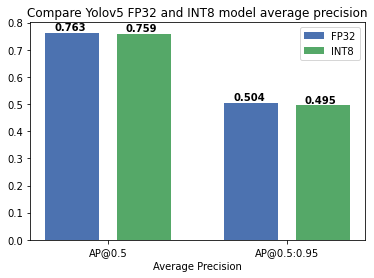
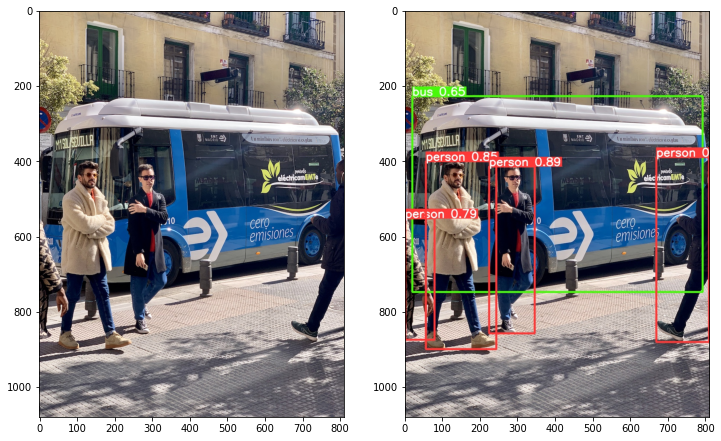

<!DOCTYPE html>

<html lang="en">
  <head>
    <meta charset="utf-8" />
    <meta name="viewport" content="width=device-width, initial-scale=1.0" /><meta name="generator" content="Docutils 0.17.1: http://docutils.sourceforge.net/" />

    <title>Quantize the Ultralytics YOLOv5 model and check accuracy using the OpenVINO POT API &#8212; OpenVINO™  documentation</title>
    
    
  <link href="../_static/css/theme.css" rel="stylesheet">
  <link href="../_static/css/index.ff1ffe594081f20da1ef19478df9384b.css" rel="stylesheet">

    
  <link rel="stylesheet"
    href="../_static/vendor/fontawesome/5.13.0/css/all.min.css">
  <link rel="preload" as="font" type="font/woff2" crossorigin
    href="../_static/vendor/fontawesome/5.13.0/webfonts/fa-solid-900.woff2">
  <link rel="preload" as="font" type="font/woff2" crossorigin
    href="../_static/vendor/fontawesome/5.13.0/webfonts/fa-brands-400.woff2">

    
      

    
    <link rel="stylesheet" type="text/css" href="../_static/pygments.css" />
    <link rel="stylesheet" type="text/css" href="../_static/css/blank.css" />
    <link rel="stylesheet" type="text/css" href="../_static/tabs.css" />
    <link rel="stylesheet" type="text/css" href="../_static/copybutton.css" />
    <link rel="stylesheet" type="text/css" href="../_static/mystnb.css" />
    <link rel="stylesheet" type="text/css" href="../_static/togglebutton.css" />
    <link rel="stylesheet" type="text/css" href="../_static/panels-main.c949a650a448cc0ae9fd3441c0e17fb0.css" />
    <link rel="stylesheet" type="text/css" href="../_static/panels-variables.06eb56fa6e07937060861dad626602ad.css" />
    <link rel="stylesheet" type="text/css" href="../_static/doxyrest-pygments.css" />
    
  <link rel="preload" as="script" href="../_static/js/index.be7d3bbb2ef33a8344ce.js">

    <link href="../_static/css/media/favicon.ico" rel="shortcut icon">
    <link rel="stylesheet" href="../_static/css/openvino_sphinx_theme.css" type="text/css" />
    <link rel="stylesheet" href="../_static/css/button.css" type="text/css" />
    <link rel="stylesheet" href="../_static/css/input.css" type="text/css" />
    <link rel="stylesheet" href="../_static/css/textfield.css" type="text/css" />
    <link rel="stylesheet" href="../_static/css/tabs.css" type="text/css" />
    <script src="../_static/js/openvino_sphinx_theme.js"></script>
    <link rel="stylesheet" href="../_static/css/viewer.min.css" type="text/css" />
    <link rel="stylesheet" href="../_static/css/custom.css" type="text/css" />

    <script src="https://cdn.jsdelivr.net/npm/chart.js@2.9.3/dist/Chart.min.js"></script>
    <script src="https://cdn.jsdelivr.net/npm/chartjs-plugin-datalabels"></script>
    <script src="https://cdnjs.cloudflare.com/ajax/libs/chartjs-plugin-annotation/0.5.7/chartjs-plugin-annotation.min.js"></script>
    <script src="https://cdn.jsdelivr.net/npm/chartjs-plugin-barchart-background@1.3.0/build/Plugin.Barchart.Background.min.js"></script>
    <script src="https://cdn.jsdelivr.net/npm/chartjs-plugin-deferred@1"></script>
    <script src="https://cdnjs.cloudflare.com/ajax/libs/PapaParse/5.3.1/papaparse.min.js"></script>
    <script src="../_static/js/viewer.min.js"></script>
    <script src="/assets/versions_raw.js"></script>

    <script data-url_root="../" id="documentation_options" src="../_static/documentation_options.js"></script>
    <script src="../_static/jquery.js"></script>
    <script src="../_static/underscore.js"></script>
    <script src="../_static/doctools.js"></script>
    <script src="../_static/tabs.js"></script>
    <script src="../_static/clipboard.min.js"></script>
    <script src="../_static/copybutton.js"></script>
    <script src="../_static/js/custom.js"></script>
    <script src="../_static/js/graphs.js"></script>
    <script src="../_static/js/graphs_ov_tf.js"></script>
    <script>let toggleHintShow = 'Click to show';</script>
    <script>let toggleHintHide = 'Click to hide';</script>
    <script>let toggleOpenOnPrint = 'true';</script>
    <script src="../_static/togglebutton.js"></script>
    <script src="../_static/target-highlight.js"></script>
    <script>var togglebuttonSelector = '.toggle, .admonition.dropdown, .tag_hide_input div.cell_input, .tag_hide-input div.cell_input, .tag_hide_output div.cell_output, .tag_hide-output div.cell_output, .tag_hide_cell.cell, .tag_hide-cell.cell';</script>
    <link rel="canonical" href="https://docs.openvino.ai/latest/notebooks/220-yolov5-accuracy-check-and-quantization-with-output.html" />
    <link rel="shortcut icon" href="../_static/favicon.ico"/>
    <link rel="index" title="Index" href="../genindex.html" />
    <link rel="search" title="Search" href="../search.html" />
    <link rel="next" title="Machine translation demo" href="221-machine-translation-with-output.html" />
    <link rel="prev" title="OpenVINO optimizations for Knowledge graphs" href="219-knowledge-graphs-conve-with-output.html" />
    <meta name="viewport" content="width=device-width, initial-scale=1" />
    <meta name="docsearch:language" content="en">
    

    <!-- Google Analytics -->
    
  </head>
  <body data-spy="scroll" data-target="#bd-toc-nav" data-offset="80">
    
    <div class="container-fluid" id="banner"></div>

    
      <nav class="navbar navbar-light navbar-expand-lg bg-light fixed-top bd-navbar" id="navbar-main"><div class="container-xl">

  <div id="navbar-start">
    
    

<a class="navbar-brand" href="../index.html">
  
</a>


    
  </div>

  <button class="navbar-toggler" type="button" data-toggle="collapse" data-target="#navbar-collapsible" aria-controls="navbar-collapsible" aria-expanded="false" aria-label="Toggle navigation">
    <span class="navbar-toggler-icon"></span>
  </button>

  
  <div id="navbar-collapsible" class="col-lg-9 collapse navbar-collapse">
    <div id="navbar-center" class="mr-auto">
      
      <div class="navbar-center-item">
        <ul id="navbar-main-elements" class="navbar-nav">
    <li class="toctree-l1 nav-item">
 <a class="reference internal nav-link" href="../pages/get-started-guide.html">
  Get Started
 </a>
</li>

<li class="toctree-l1 nav-item">
 <a class="reference internal nav-link" href="../pages/documentation.html">
  Documentation
 </a>
</li>

<li class="toctree-l1 current active nav-item">
 <a class="reference internal nav-link" href="../tutorials.html">
  Tutorials
 </a>
</li>

<li class="toctree-l1 nav-item">
 <a class="reference internal nav-link" href="../api/api_reference.html">
  API Reference
 </a>
</li>

<li class="toctree-l1 nav-item">
 <a class="reference internal nav-link" href="../model_zoo.html">
  Model Zoo
 </a>
</li>

<li class="toctree-l1 nav-item">
 <a class="reference internal nav-link" href="../pages/resources.html">
  Resources
 </a>
</li>

    
</ul>
      </div>
      
    </div>

    <div id="navbar-end">
      
      <div class="navbar-end-item">
        <ul id="navbar-icon-links" class="navbar-nav" aria-label="Icon Links">
        <li class="nav-item">
          <a class="nav-link" href="https://github.com/openvinotoolkit/openvino" rel="noopener" target="_blank" title="GitHub">
            <span><i class="sst-github"></i></span>
            <label class="sr-only">GitHub</label>
          </a>
        </li>
</ul>
      </div>
      
      <div class="navbar-end-item">
        
<div class="dropdown sst-dropdown sst-dropdown-navbar">
  <button class="btn sst-btn dropdown-toggle" type="button" id="version-selector" data-toggle="dropdown" aria-haspopup="true" aria-expanded="false"></button>
  <div class="dropdown-menu" aria-labelledby="version-selector">
  </div>
</div>
      </div>
      
      <div class="navbar-end-item">
        

<div class="dropdown sst-dropdown sst-dropdown-navbar">
  <button class="btn sst-btn dropdown-toggle" type="button" id="language-selector" data-toggle="dropdown" aria-haspopup="true" aria-expanded="false">English</button>
  <div class="dropdown-menu" aria-labelledby="language-selector">
    
      
        <a class="dropdown-item font-weight-bold" href="/openvino-docs/index.html">English</a>
      
    
      
        <a  class="dropdown-item" href="/cn/openvino-docs/index.html">Chinese</a>
      
    
  </div>
</div>

      </div>
      
    </div>
  </div>
</div>
        <div id="collapse-nav-wrapper" class="container-xl">
          <button id="collapse-nav" class="button bttn-prm button-size-m" type="button" data-toggle="collapse" data-target="#nav-tree" aria-expanded="false" aria-controls="nav-tree">
            Documentation navigation <i class="fas fa-chevron-down"></i>
          </button>
        </div>
      </nav>
      <div class="transition-banner container-fluid alert alert-info alert-dismissible fade show" role="alert">
        <p>OpenVINO 2022.1 introduces a new version of OpenVINO API (API 2.0). For more information on the changes and transition steps, see the <a href="https://docs.openvino.ai/latest/openvino_2_0_transition_guide.html">transition guide</a></p>
        <button type="button" class="close" data-dismiss="alert" aria-label="Close">
          <span aria-hidden="true">&times;</span>
        </button>
    </div>
    

    <div class="container-xl">
      <div class="row">
          
            
            <!-- Only show if we have sidebars configured, else just a small margin  -->
            <div class="col-12 col-md-3 bd-sidebar" id="nav-tree"><form class="searchForm bd-search d-flex align-items-center" action="../search.html" method="get">
    <i class="icon fas fa-search"></i>
    <input type="search" class="form-control" name="query" id="search-input" placeholder="Search the docs ..." aria-label="Search the docs ..." autocomplete="off" >
</form><nav class="bd-links" id="bd-docs-nav" aria-label="Main navigation">
  <div class="bd-toc-item active">
    <p aria-level="2" class="caption" role="heading">
 <span class="caption-text">
  Notebooks
 </span>
</p>
<ul class="current nav bd-sidenav">
 <li class="toctree-l1">
  <a class="reference internal" href="../notebooks-installation.html">
   Installation of OpenVINO™ Notebooks
  </a>
 </li>
 <li class="toctree-l1">
  <a class="reference internal" href="001-hello-world-with-output.html">
   Hello Image Classification
  </a>
 </li>
 <li class="toctree-l1">
  <a class="reference internal" href="002-openvino-api-with-output.html">
   OpenVINO™ Runtime API Tutorial
  </a>
 </li>
 <li class="toctree-l1">
  <a class="reference internal" href="003-hello-segmentation-with-output.html">
   Hello Image Segmentation
  </a>
 </li>
 <li class="toctree-l1">
  <a class="reference internal" href="004-hello-detection-with-output.html">
   Hello Object Detection
  </a>
 </li>
 <li class="toctree-l1">
  <a class="reference internal" href="101-tensorflow-to-openvino-with-output.html">
   Convert a TensorFlow Model to OpenVINO™
  </a>
 </li>
 <li class="toctree-l1">
  <a class="reference internal" href="102-pytorch-onnx-to-openvino-with-output.html">
   Convert a PyTorch Model to ONNX and OpenVINO™ IR
  </a>
 </li>
 <li class="toctree-l1">
  <a class="reference internal" href="103-paddle-onnx-to-openvino-classification-with-output.html">
   Convert a PaddlePaddle Model to ONNX and OpenVINO™ IR
  </a>
 </li>
 <li class="toctree-l1">
  <a class="reference internal" href="104-model-tools-with-output.html">
   Working with Open Model Zoo Models
  </a>
 </li>
 <li class="toctree-l1">
  <a class="reference internal" href="105-language-quantize-bert-with-output.html">
   Quantize NLP models with Post-Training Optimization Tool ​in OpenVINO™
  </a>
 </li>
 <li class="toctree-l1">
  <a class="reference internal" href="106-auto-device-with-output.html">
   Automatic Device Selection with OpenVINO™
  </a>
 </li>
 <li class="toctree-l1">
  <a class="reference internal" href="107-speech-recognition-quantization-with-output.html">
   Quantize Speech Recognition Models with OpenVINO™ Post-Training Optimization Tool ​
  </a>
 </li>
 <li class="toctree-l1">
  <a class="reference internal" href="110-ct-segmentation-quantize-nncf-with-output.html">
   Quantize a Segmentation Model and Show Live Inference
  </a>
 </li>
 <li class="toctree-l1">
  <a class="reference internal" href="110-ct-segmentation-quantize-with-output.html">
   Quantize a Segmentation Model and Show Live Inference
  </a>
 </li>
 <li class="toctree-l1">
  <a class="reference internal" href="111-detection-quantization-with-output.html">
   Object Detection Quantization
  </a>
 </li>
 <li class="toctree-l1">
  <a class="reference internal" href="112-pytorch-post-training-quantization-nncf-with-output.html">
   Post-Training Quantization of PyTorch models with NNCF
  </a>
 </li>
 <li class="toctree-l1">
  <a class="reference internal" href="113-image-classification-quantization-with-output.html">
   Quantization of Image Classification Models
  </a>
 </li>
 <li class="toctree-l1">
  <a class="reference internal" href="114-quantization-simplified-mode-with-output.html">
   INT8 Quantization with Post-training Optimization Tool (POT) in Simplified Mode tutorial
  </a>
 </li>
 <li class="toctree-l1">
  <a class="reference internal" href="115-async-api-with-output.html">
   Asynchronous Inference with OpenVINO™
  </a>
 </li>
 <li class="toctree-l1">
  <a class="reference internal" href="201-vision-monodepth-with-output.html">
   Monodepth Estimation with OpenVINO
  </a>
 </li>
 <li class="toctree-l1">
  <a class="reference internal" href="202-vision-superresolution-image-with-output.html">
   Single Image Super Resolution with OpenVINO™
  </a>
 </li>
 <li class="toctree-l1">
  <a class="reference internal" href="202-vision-superresolution-video-with-output.html">
   Video Super Resolution with OpenVINO™
  </a>
 </li>
 <li class="toctree-l1">
  <a class="reference internal" href="203-meter-reader-with-output.html">
   Industrial Meter Reader
  </a>
 </li>
 <li class="toctree-l1">
  <a class="reference internal" href="204-named-entity-recognition-with-output.html">
   Document Entity Extraction with OpenVINO
  </a>
 </li>
 <li class="toctree-l1">
  <a class="reference internal" href="205-vision-background-removal-with-output.html">
   Image Background Removal with U^2-Net and OpenVINO™
  </a>
 </li>
 <li class="toctree-l1">
  <a class="reference internal" href="206-vision-paddlegan-anime-with-output.html">
   Photos to Anime with PaddleGAN and OpenVINO
  </a>
 </li>
 <li class="toctree-l1">
  <a class="reference internal" href="207-vision-paddlegan-superresolution-with-output.html">
   Super Resolution with PaddleGAN and OpenVINO™
  </a>
 </li>
 <li class="toctree-l1">
  <a class="reference internal" href="208-optical-character-recognition-with-output.html">
   Optical Character Recognition (OCR) with OpenVINO™
  </a>
 </li>
 <li class="toctree-l1">
  <a class="reference internal" href="209-handwritten-ocr-with-output.html">
   Handwritten Chinese and Japanese OCR with OpenVINO™
  </a>
 </li>
 <li class="toctree-l1">
  <a class="reference internal" href="210-ct-scan-live-inference-with-output.html">
   Live Inference and Benchmark CT-scan Data with OpenVINO™
  </a>
 </li>
 <li class="toctree-l1">
  <a class="reference internal" href="211-speech-to-text-with-output.html">
   Speech to Text with OpenVINO™
  </a>
 </li>
 <li class="toctree-l1">
  <a class="reference internal" href="212-onnx-style-transfer-with-output.html">
   Style Transfer on ONNX Models with OpenVINO™
  </a>
 </li>
 <li class="toctree-l1">
  <a class="reference internal" href="214-vision-paddle-classification-with-output.html">
   PaddlePaddle Image Classification with OpenVINO™
  </a>
 </li>
 <li class="toctree-l1">
  <a class="reference internal" href="215-image-inpainting-with-output.html">
   Image In-painting with OpenVINO™
  </a>
 </li>
 <li class="toctree-l1">
  <a class="reference internal" href="216-license-plate-recognition-with-output.html">
   License Plate Recognition with OpenVINO™
  </a>
 </li>
 <li class="toctree-l1">
  <a class="reference internal" href="217-vision-deblur-with-output.html">
   Deblur Photos with DeblurGAN-v2 and OpenVINO™
  </a>
 </li>
 <li class="toctree-l1">
  <a class="reference internal" href="218-vehicle-detection-and-recognition-with-output.html">
   Vehicle Detection And Recognition with OpenVINO™
  </a>
 </li>
 <li class="toctree-l1">
  <a class="reference internal" href="219-knowledge-graphs-conve-with-output.html">
   OpenVINO optimizations for Knowledge graphs
  </a>
 </li>
 <li class="toctree-l1 current active">
  <a class="current reference internal" href="#">
   Quantize the Ultralytics YOLOv5 model and check accuracy using the OpenVINO POT API
  </a>
 </li>
 <li class="toctree-l1">
  <a class="reference internal" href="221-machine-translation-with-output.html">
   Machine translation demo
  </a>
 </li>
 <li class="toctree-l1">
  <a class="reference internal" href="222-vision-image-colorization-with-output.html">
   Image Colorization with OpenVINO
  </a>
 </li>
 <li class="toctree-l1">
  <a class="reference internal" href="223-gpt2-text-prediction-with-output.html">
   GPT-2 Text Prediction with OpenVINO
  </a>
 </li>
 <li class="toctree-l1">
  <a class="reference internal" href="301-tensorflow-training-openvino-pot-with-output.html">
   Post-Training Quantization with TensorFlow Classification Model
  </a>
 </li>
 <li class="toctree-l1">
  <a class="reference internal" href="301-tensorflow-training-openvino-with-output.html">
   From Training to Deployment with TensorFlow and OpenVINO™
  </a>
 </li>
 <li class="toctree-l1">
  <a class="reference internal" href="302-pytorch-quantization-aware-training-with-output.html">
   Quantization Aware Training with NNCF, using PyTorch framework
  </a>
 </li>
 <li class="toctree-l1">
  <a class="reference internal" href="305-tensorflow-quantization-aware-training-with-output.html">
   Quantization Aware Training with NNCF, using TensorFlow Framework
  </a>
 </li>
 <li class="toctree-l1">
  <a class="reference internal" href="401-object-detection-with-output.html">
   Live Object Detection with OpenVINO™
  </a>
 </li>
 <li class="toctree-l1">
  <a class="reference internal" href="402-pose-estimation-with-output.html">
   Live Human Pose Estimation with OpenVINO™
  </a>
 </li>
 <li class="toctree-l1">
  <a class="reference internal" href="403-action-recognition-webcam-with-output.html">
   Human Action Recognition with OpenVINO™
  </a>
 </li>
 <li class="toctree-l1">
  <a class="reference internal" href="405-paddle-ocr-webcam-with-output.html">
   PaddleOCR with OpenVINO™
  </a>
 </li>
 <li class="toctree-l1">
  <a class="reference internal" href="notebook_utils-with-output.html">
   Notebook Utils
  </a>
 </li>
</ul>

  </div>
</nav>
            </div>
            
          

          
          <div class="d-none d-xl-block col-xl-2 bd-toc">
            
              
              <div class="toc-item">
                
<div class="tocsection onthispage pt-5 pb-3">
    <i class="fas fa-list"></i> On this page
</div>

<nav id="bd-toc-nav">
    <ul class="visible nav section-nav flex-column">
 <li class="toc-h2 nav-item toc-entry">
  <a class="reference internal nav-link" href="#preparation">
   Preparation
  </a>
  <ul class="nav section-nav flex-column">
   <li class="toc-h3 nav-item toc-entry">
    <a class="reference internal nav-link" href="#download-the-yolov5-model">
     Download the YOLOv5 model
    </a>
   </li>
   <li class="toc-h3 nav-item toc-entry">
    <a class="reference internal nav-link" href="#conversion-of-the-yolov5-model-to-openvino">
     Conversion of the YOLOv5 model to OpenVINO
    </a>
   </li>
   <li class="toc-h3 nav-item toc-entry">
    <a class="reference internal nav-link" href="#imports">
     Imports
    </a>
   </li>
  </ul>
 </li>
 <li class="toc-h2 nav-item toc-entry">
  <a class="reference internal nav-link" href="#model-quantization-with-pot">
   Model Quantization with POT
  </a>
  <ul class="nav section-nav flex-column">
   <li class="toc-h3 nav-item toc-entry">
    <a class="reference internal nav-link" href="#create-yolov5-dataloader-class">
     Create YOLOv5 DataLoader class
    </a>
   </li>
   <li class="toc-h3 nav-item toc-entry">
    <a class="reference internal nav-link" href="#create-yolov5-metric-class">
     Create YOLOv5 Metric Class
    </a>
   </li>
   <li class="toc-h3 nav-item toc-entry">
    <a class="reference internal nav-link" href="#set-pot-configuration">
     Set POT Configuration
    </a>
   </li>
   <li class="toc-h3 nav-item toc-entry">
    <a class="reference internal nav-link" href="#run-quantization-pipeline-and-accuracy-verification">
     Run Quantization Pipeline and Accuracy Verification
    </a>
   </li>
  </ul>
 </li>
 <li class="toc-h2 nav-item toc-entry">
  <a class="reference internal nav-link" href="#inference-demo-performance-comparison">
   Inference Demo Performance Comparison
  </a>
 </li>
 <li class="toc-h2 nav-item toc-entry">
  <a class="reference internal nav-link" href="#references">
   References
  </a>
 </li>
</ul>

</nav>
              </div>
              
              <div class="toc-item">
                <div class="tocsection download-docs">
  <div class="dropdown sst-dropdown">
    <button class="button bttn-prm button-size-m" data-display="static" type="button" id="download-options"
      data-toggle="dropdown" aria-haspopup="true" aria-expanded="false">
      Download Docs
    </button>
    <div class="dropdown-menu" aria-labelledby="download-options">
      <a class="dropdown-item" href="#" onclick="window.print()">.pdf</a>
      <a id="download-zip-btn" class="dropdown-item" href="#">.zip</a>
    </div>
  </div>
</div>
              </div>
              
            
          </div>
          

          
          
              
          
          <main class="col-12 col-md-9 col-xl-7 py-md-5 pl-md-5 pr-md-4 bd-content" role="main">

<div class="tocsection editthispage">
    <a href="None">
        <i class="fas fa-pencil-alt"></i> Edit this page
    </a>
</div>

            
                <div>
                  
  <section id="quantize-the-ultralytics-yolov5-model-and-check-accuracy-using-the-openvino-pot-api">
<h1>Quantize the Ultralytics YOLOv5 model and check accuracy using the OpenVINO POT API<a class="headerlink" href="#quantize-the-ultralytics-yolov5-model-and-check-accuracy-using-the-openvino-pot-api" title="Permalink to this headline">¶</a></h1>
<p>This tutorial demonstrates step-by-step how to perform model
quantization using the OpenVINO <a class="reference external" href="https://docs.openvino.ai/latest/pot_introduction.html">Post-Training Optimization Tool
(POT)</a>,
compare model accuracy between the FP32 precision and quantized INT8
precision models and run a demo of model inference based on sample code
from <a class="reference external" href="https://github.com/ultralytics/yolov5">Ultralytics Yolov5</a> with
the OpenVINO backend.</p>
<p>First, we will export the YOLOv5m model to OpenVINO IR by following the
<a class="reference external" href="https://github.com/ultralytics/yolov5/issues/251">export
instructions</a> in
the <a class="reference external" href="https://github.com/ultralytics/yolov5">Ultralytics YOLOv5 repo</a>.
Then we use the OpenVINO <a class="reference external" href="https://docs.openvino.ai/latest/pot_introduction.html">Post-Training Optimization Tool
(POT)</a> API to
quantize the model based on the Non-Max Suppression (NMS) processing
provided by Ultralytics.</p>
<p>OpenVINO POT provides two usages: 1. Use the API to override the model
DataLoader class with custom image/annotation loading and preprocessing
and identify your own class which is inherited from Metric for inference
result postprocessing and accuracy calculation. 2. Use POT command line
tool with the adapters provided by <a class="reference external" href="https://github.com/openvinotoolkit/open_model_zoo/blob/master/tools/accuracy_checker/README.md">Accuracy
Checker</a>,
pre/postprocessing and metric by configuration file. This is recommend
when using <a class="reference external" href="https://github.com/openvinotoolkit/open_model_zoo">Open Model
Zoo</a> models with
the omz_quantizer tool.</p>
<p>The data pre/post-processing functions provided by Ultralytics are
different from the Accuracy Checker provided configuration for YOLOv3,
so we will need to use the POT API (approach #1) with a custom
DataLoader and Metric. This allows us to include pre- and
post-processing from Ultralytics in our quantization pipeline.</p>
<section id="preparation">
<h2>Preparation<a class="headerlink" href="#preparation" title="Permalink to this headline">¶</a></h2>
<section id="download-the-yolov5-model">
<h3>Download the YOLOv5 model<a class="headerlink" href="#download-the-yolov5-model" title="Permalink to this headline">¶</a></h3>
<div class="highlight-ipython3 notranslate"><div class="highlight"><pre><span></span><span class="kn">import</span> <span class="nn">sys</span>
<span class="kn">import</span> <span class="nn">numpy</span> <span class="k">as</span> <span class="nn">np</span>
<span class="kn">import</span> <span class="nn">matplotlib.pyplot</span> <span class="k">as</span> <span class="nn">plt</span>
<span class="kn">import</span> <span class="nn">torch</span>
<span class="kn">from</span> <span class="nn">pathlib</span> <span class="kn">import</span> <span class="n">Path</span>
<span class="kn">from</span> <span class="nn">addict</span> <span class="kn">import</span> <span class="n">Dict</span>
<span class="kn">from</span> <span class="nn">IPython.display</span> <span class="kn">import</span> <span class="n">Markdown</span><span class="p">,</span> <span class="n">display</span>

<span class="k">if</span> <span class="ow">not</span> <span class="n">Path</span><span class="p">(</span><span class="s2">&quot;./yolov5/&quot;</span><span class="p">)</span><span class="o">.</span><span class="n">exists</span><span class="p">():</span>
    <span class="n">command_download</span> <span class="o">=</span> <span class="sa">f</span><span class="s1">&#39;</span><span class="si">{</span><span class="s2">&quot;git clone https://github.com/ultralytics/yolov5.git -b v6.1&quot;</span><span class="si">}</span><span class="s1">&#39;</span>
    <span class="n">command_download</span> <span class="o">=</span> <span class="s2">&quot; &quot;</span><span class="o">.</span><span class="n">join</span><span class="p">(</span><span class="n">command_download</span><span class="o">.</span><span class="n">split</span><span class="p">())</span>
    <span class="nb">print</span><span class="p">(</span><span class="s2">&quot;Download Ultralytics Yolov5 project source:&quot;</span><span class="p">)</span>
    <span class="n">display</span><span class="p">(</span><span class="n">Markdown</span><span class="p">(</span><span class="sa">f</span><span class="s2">&quot;`</span><span class="si">{</span><span class="n">command_download</span><span class="si">}</span><span class="s2">`&quot;</span><span class="p">))</span>
    <span class="n">download_res</span> <span class="o">=</span> <span class="o">%</span><span class="k">sx</span> <span class="nv">$command_download</span>
<span class="k">else</span><span class="p">:</span>
    <span class="nb">print</span><span class="p">(</span><span class="s2">&quot;Ultralytics Yolov5 repo already exists.&quot;</span><span class="p">)</span>
</pre></div>
</div>
<div class="highlight-default notranslate"><div class="highlight"><pre><span></span><span class="n">Download</span> <span class="n">Ultralytics</span> <span class="n">Yolov5</span> <span class="n">project</span> <span class="n">source</span><span class="p">:</span>
</pre></div>
</div>
<p><code class="docutils literal notranslate"><span class="pre">git</span> <span class="pre">clone</span> <span class="pre">https://github.com/ultralytics/yolov5.git</span> <span class="pre">-b</span> <span class="pre">v6.1</span></code></p>
</section>
<section id="conversion-of-the-yolov5-model-to-openvino">
<h3>Conversion of the YOLOv5 model to OpenVINO<a class="headerlink" href="#conversion-of-the-yolov5-model-to-openvino" title="Permalink to this headline">¶</a></h3>
<ol class="arabic">
<li><p>Convert Pytorch model to ONNX</p></li>
<li><p>Convert ONNX to OpenVINO</p>
<p>Call the OpenVINO Model Optimizer tool to convert the ONNX model to
OpenVINO IR, with FP32 precision.</p>
</li>
</ol>
<div class="highlight-ipython3 notranslate"><div class="highlight"><pre><span></span><span class="nb">print</span><span class="p">(</span><span class="s2">&quot;Convert PyTorch model to ONNX Model:&quot;</span><span class="p">)</span>
<span class="n">command_export</span> <span class="o">=</span> <span class="sa">f</span><span class="s1">&#39;</span><span class="si">{</span><span class="s2">&quot;cd yolov5 &amp;&amp; python export.py --weights yolov5m/yolov5m.pt --imgsz 640 --batch-size 1 --include onnx &quot;</span><span class="si">}</span><span class="s1">&#39;</span>
<span class="n">display</span><span class="p">(</span><span class="n">Markdown</span><span class="p">(</span><span class="sa">f</span><span class="s2">&quot;`</span><span class="si">{</span><span class="n">command_export</span><span class="si">}</span><span class="s2">`&quot;</span><span class="p">))</span>
<span class="o">!</span> <span class="nv">$command_export</span>

<span class="nb">print</span><span class="p">(</span><span class="s2">&quot;Convert ONNX model to OpenVINO IR:&quot;</span><span class="p">)</span>
<span class="n">onnx_path</span> <span class="o">=</span> <span class="s2">&quot;./yolov5/yolov5m/yolov5m.onnx&quot;</span>
<span class="n">IMAGE_HEIGHT</span> <span class="o">=</span> <span class="mi">640</span>
<span class="n">IMAGE_WIDTH</span> <span class="o">=</span> <span class="mi">640</span>
<span class="n">model_output_path</span> <span class="o">=</span> <span class="s2">&quot;./yolov5/yolov5m/yolov5m_openvino_model/&quot;</span>

<span class="c1"># Construct the command for Model Optimizer.</span>
<span class="n">command_mo</span> <span class="o">=</span> <span class="sa">f</span><span class="s2">&quot;&quot;&quot;mo</span>
<span class="s2">                 --input_model &quot;</span><span class="si">{</span><span class="n">onnx_path</span><span class="si">}</span><span class="s2">&quot;</span>
<span class="s2">                 --input_shape &quot;[1, 3, </span><span class="si">{</span><span class="n">IMAGE_HEIGHT</span><span class="si">}</span><span class="s2">, </span><span class="si">{</span><span class="n">IMAGE_WIDTH</span><span class="si">}</span><span class="s2">]&quot;</span>
<span class="s2">                 --data_type FP32</span>
<span class="s2">                 --output_dir &quot;</span><span class="si">{</span><span class="n">model_output_path</span><span class="si">}</span><span class="s2">&quot;</span>
<span class="s2">                 &quot;&quot;&quot;</span>
<span class="n">command_mo</span> <span class="o">=</span> <span class="s2">&quot; &quot;</span><span class="o">.</span><span class="n">join</span><span class="p">(</span><span class="n">command_mo</span><span class="o">.</span><span class="n">split</span><span class="p">())</span>
<span class="n">display</span><span class="p">(</span><span class="n">Markdown</span><span class="p">(</span><span class="sa">f</span><span class="s2">&quot;`</span><span class="si">{</span><span class="n">command_mo</span><span class="si">}</span><span class="s2">`&quot;</span><span class="p">))</span>
<span class="o">!</span> <span class="nv">$command_mo</span>
</pre></div>
</div>
<div class="highlight-default notranslate"><div class="highlight"><pre><span></span><span class="n">Convert</span> <span class="n">PyTorch</span> <span class="n">model</span> <span class="n">to</span> <span class="n">ONNX</span> <span class="n">Model</span><span class="p">:</span>
</pre></div>
</div>
<p><code class="docutils literal notranslate"><span class="pre">cd</span> <span class="pre">yolov5</span> <span class="pre">&amp;&amp;</span> <span class="pre">python</span> <span class="pre">export.py</span> <span class="pre">--weights</span> <span class="pre">yolov5m/yolov5m.pt</span> <span class="pre">--imgsz</span> <span class="pre">640</span> <span class="pre">--batch-size</span> <span class="pre">1</span> <span class="pre">--include</span> <span class="pre">onnx</span></code></p>
<div class="highlight-default notranslate"><div class="highlight"><pre><span></span>export: data=data/coco128.yaml, weights=[&#39;yolov5m/yolov5m.pt&#39;], imgsz=[640], batch_size=1, device=cpu, half=False, inplace=False, train=False, optimize=False, int8=False, dynamic=False, simplify=False, opset=12, verbose=False, workspace=4, nms=False, agnostic_nms=False, topk_per_class=100, topk_all=100, iou_thres=0.45, conf_thres=0.25, include=[&#39;onnx&#39;]
YOLOv5 🚀 v6.1-0-g3752807 torch 1.8.1+cpu CPU

Downloading https://github.com/ultralytics/yolov5/releases/download/v6.2/yolov5m.pt to yolov5m/yolov5m.pt...
100%|██████████████████████████████████████| 40.8M/40.8M [00:02&lt;00:00, 19.1MB/s]

Fusing layers...
Model Summary: 290 layers, 21172173 parameters, 0 gradients

PyTorch: starting from yolov5m/yolov5m.pt with output shape (1, 25200, 85) (42.8 MB)

ONNX: starting export with onnx 1.11.0...
ONNX: export success, saved as yolov5m/yolov5m.onnx (85.1 MB)

Export complete (6.26s)
Results saved to /opt/home/k8sworker/cibuilds/ov-notebook/OVNotebookOps-231/.workspace/scm/ov-notebook/notebooks/220-yolov5-accuracy-check-and-quantization/yolov5/yolov5m
Detect:          python detect.py --weights yolov5m/yolov5m.onnx
PyTorch Hub:     model = torch.hub.load(&#39;ultralytics/yolov5&#39;, &#39;custom&#39;, &#39;yolov5m/yolov5m.onnx&#39;)
Validate:        python val.py --weights yolov5m/yolov5m.onnx
Visualize:       https://netron.app
Convert ONNX model to OpenVINO IR:
</pre></div>
</div>
<p><code class="docutils literal notranslate"><span class="pre">mo</span> <span class="pre">--input_model</span> <span class="pre">&quot;./yolov5/yolov5m/yolov5m.onnx&quot;</span> <span class="pre">--input_shape</span> <span class="pre">&quot;[1,</span> <span class="pre">3,</span> <span class="pre">640,</span> <span class="pre">640]&quot;</span> <span class="pre">--data_type</span> <span class="pre">FP32</span> <span class="pre">--output_dir</span> <span class="pre">&quot;./yolov5/yolov5m/yolov5m_openvino_model/&quot;</span></code></p>
<div class="highlight-default notranslate"><div class="highlight"><pre><span></span><span class="n">Model</span> <span class="n">Optimizer</span> <span class="n">arguments</span><span class="p">:</span>
<span class="n">Common</span> <span class="n">parameters</span><span class="p">:</span>
    <span class="o">-</span> <span class="n">Path</span> <span class="n">to</span> <span class="n">the</span> <span class="n">Input</span> <span class="n">Model</span><span class="p">:</span>  <span class="o">/</span><span class="n">opt</span><span class="o">/</span><span class="n">home</span><span class="o">/</span><span class="n">k8sworker</span><span class="o">/</span><span class="n">cibuilds</span><span class="o">/</span><span class="n">ov</span><span class="o">-</span><span class="n">notebook</span><span class="o">/</span><span class="n">OVNotebookOps</span><span class="o">-</span><span class="mi">231</span><span class="o">/.</span><span class="n">workspace</span><span class="o">/</span><span class="n">scm</span><span class="o">/</span><span class="n">ov</span><span class="o">-</span><span class="n">notebook</span><span class="o">/</span><span class="n">notebooks</span><span class="o">/</span><span class="mi">220</span><span class="o">-</span><span class="n">yolov5</span><span class="o">-</span><span class="n">accuracy</span><span class="o">-</span><span class="n">check</span><span class="o">-</span><span class="ow">and</span><span class="o">-</span><span class="n">quantization</span><span class="o">/./</span><span class="n">yolov5</span><span class="o">/</span><span class="n">yolov5m</span><span class="o">/</span><span class="n">yolov5m</span><span class="o">.</span><span class="n">onnx</span>
    <span class="o">-</span> <span class="n">Path</span> <span class="k">for</span> <span class="n">generated</span> <span class="n">IR</span><span class="p">:</span>    <span class="o">/</span><span class="n">opt</span><span class="o">/</span><span class="n">home</span><span class="o">/</span><span class="n">k8sworker</span><span class="o">/</span><span class="n">cibuilds</span><span class="o">/</span><span class="n">ov</span><span class="o">-</span><span class="n">notebook</span><span class="o">/</span><span class="n">OVNotebookOps</span><span class="o">-</span><span class="mi">231</span><span class="o">/.</span><span class="n">workspace</span><span class="o">/</span><span class="n">scm</span><span class="o">/</span><span class="n">ov</span><span class="o">-</span><span class="n">notebook</span><span class="o">/</span><span class="n">notebooks</span><span class="o">/</span><span class="mi">220</span><span class="o">-</span><span class="n">yolov5</span><span class="o">-</span><span class="n">accuracy</span><span class="o">-</span><span class="n">check</span><span class="o">-</span><span class="ow">and</span><span class="o">-</span><span class="n">quantization</span><span class="o">/./</span><span class="n">yolov5</span><span class="o">/</span><span class="n">yolov5m</span><span class="o">/</span><span class="n">yolov5m_openvino_model</span><span class="o">/</span>
    <span class="o">-</span> <span class="n">IR</span> <span class="n">output</span> <span class="n">name</span><span class="p">:</span>   <span class="n">yolov5m</span>
    <span class="o">-</span> <span class="n">Log</span> <span class="n">level</span><span class="p">:</span>    <span class="n">ERROR</span>
    <span class="o">-</span> <span class="n">Batch</span><span class="p">:</span>    <span class="n">Not</span> <span class="n">specified</span><span class="p">,</span> <span class="n">inherited</span> <span class="kn">from</span> <span class="nn">the</span> <span class="n">model</span>
    <span class="o">-</span> <span class="n">Input</span> <span class="n">layers</span><span class="p">:</span>     <span class="n">Not</span> <span class="n">specified</span><span class="p">,</span> <span class="n">inherited</span> <span class="kn">from</span> <span class="nn">the</span> <span class="n">model</span>
    <span class="o">-</span> <span class="n">Output</span> <span class="n">layers</span><span class="p">:</span>    <span class="n">Not</span> <span class="n">specified</span><span class="p">,</span> <span class="n">inherited</span> <span class="kn">from</span> <span class="nn">the</span> <span class="n">model</span>
    <span class="o">-</span> <span class="n">Input</span> <span class="n">shapes</span><span class="p">:</span>     <span class="p">[</span><span class="mi">1</span><span class="p">,</span> <span class="mi">3</span><span class="p">,</span> <span class="mi">640</span><span class="p">,</span> <span class="mi">640</span><span class="p">]</span>
    <span class="o">-</span> <span class="n">Source</span> <span class="n">layout</span><span class="p">:</span>    <span class="n">Not</span> <span class="n">specified</span>
    <span class="o">-</span> <span class="n">Target</span> <span class="n">layout</span><span class="p">:</span>    <span class="n">Not</span> <span class="n">specified</span>
    <span class="o">-</span> <span class="n">Layout</span><span class="p">:</span>   <span class="n">Not</span> <span class="n">specified</span>
    <span class="o">-</span> <span class="n">Mean</span> <span class="n">values</span><span class="p">:</span>  <span class="n">Not</span> <span class="n">specified</span>
    <span class="o">-</span> <span class="n">Scale</span> <span class="n">values</span><span class="p">:</span>     <span class="n">Not</span> <span class="n">specified</span>
    <span class="o">-</span> <span class="n">Scale</span> <span class="n">factor</span><span class="p">:</span>     <span class="n">Not</span> <span class="n">specified</span>
    <span class="o">-</span> <span class="n">Precision</span> <span class="n">of</span> <span class="n">IR</span><span class="p">:</span>  <span class="n">FP32</span>
    <span class="o">-</span> <span class="n">Enable</span> <span class="n">fusing</span><span class="p">:</span>    <span class="kc">True</span>
    <span class="o">-</span> <span class="n">User</span> <span class="n">transformations</span><span class="p">:</span>     <span class="n">Not</span> <span class="n">specified</span>
    <span class="o">-</span> <span class="n">Reverse</span> <span class="nb">input</span> <span class="n">channels</span><span class="p">:</span>   <span class="kc">False</span>
    <span class="o">-</span> <span class="n">Enable</span> <span class="n">IR</span> <span class="n">generation</span> <span class="k">for</span> <span class="n">fixed</span> <span class="nb">input</span> <span class="n">shape</span><span class="p">:</span>   <span class="kc">False</span>
    <span class="o">-</span> <span class="n">Use</span> <span class="n">the</span> <span class="n">transformations</span> <span class="n">config</span> <span class="n">file</span><span class="p">:</span>  <span class="kc">None</span>
<span class="n">Advanced</span> <span class="n">parameters</span><span class="p">:</span>
    <span class="o">-</span> <span class="n">Force</span> <span class="n">the</span> <span class="n">usage</span> <span class="n">of</span> <span class="n">legacy</span> <span class="n">Frontend</span> <span class="n">of</span> <span class="n">Model</span> <span class="n">Optimizer</span> <span class="k">for</span> <span class="n">model</span> <span class="n">conversion</span> <span class="n">into</span> <span class="n">IR</span><span class="p">:</span>   <span class="kc">False</span>
    <span class="o">-</span> <span class="n">Force</span> <span class="n">the</span> <span class="n">usage</span> <span class="n">of</span> <span class="n">new</span> <span class="n">Frontend</span> <span class="n">of</span> <span class="n">Model</span> <span class="n">Optimizer</span> <span class="k">for</span> <span class="n">model</span> <span class="n">conversion</span> <span class="n">into</span> <span class="n">IR</span><span class="p">:</span>  <span class="kc">False</span>
<span class="n">OpenVINO</span> <span class="n">runtime</span> <span class="n">found</span> <span class="ow">in</span><span class="p">:</span>  <span class="o">/</span><span class="n">opt</span><span class="o">/</span><span class="n">home</span><span class="o">/</span><span class="n">k8sworker</span><span class="o">/</span><span class="n">cibuilds</span><span class="o">/</span><span class="n">ov</span><span class="o">-</span><span class="n">notebook</span><span class="o">/</span><span class="n">OVNotebookOps</span><span class="o">-</span><span class="mi">231</span><span class="o">/.</span><span class="n">workspace</span><span class="o">/</span><span class="n">scm</span><span class="o">/</span><span class="n">ov</span><span class="o">-</span><span class="n">notebook</span><span class="o">/.</span><span class="n">venv</span><span class="o">/</span><span class="n">lib</span><span class="o">/</span><span class="n">python3</span><span class="mf">.8</span><span class="o">/</span><span class="n">site</span><span class="o">-</span><span class="n">packages</span><span class="o">/</span><span class="n">openvino</span>
<span class="n">OpenVINO</span> <span class="n">runtime</span> <span class="n">version</span><span class="p">:</span>   <span class="mf">2022.1.0</span><span class="o">-</span><span class="mi">7019</span><span class="o">-</span><span class="n">cdb9bec7210</span><span class="o">-</span><span class="n">releases</span><span class="o">/</span><span class="mi">2022</span><span class="o">/</span><span class="mi">1</span>
<span class="n">Model</span> <span class="n">Optimizer</span> <span class="n">version</span><span class="p">:</span>    <span class="mf">2022.1.0</span><span class="o">-</span><span class="mi">7019</span><span class="o">-</span><span class="n">cdb9bec7210</span><span class="o">-</span><span class="n">releases</span><span class="o">/</span><span class="mi">2022</span><span class="o">/</span><span class="mi">1</span>
<span class="p">[</span> <span class="n">SUCCESS</span> <span class="p">]</span> <span class="n">Generated</span> <span class="n">IR</span> <span class="n">version</span> <span class="mi">11</span> <span class="n">model</span><span class="o">.</span>
<span class="p">[</span> <span class="n">SUCCESS</span> <span class="p">]</span> <span class="n">XML</span> <span class="n">file</span><span class="p">:</span> <span class="o">/</span><span class="n">opt</span><span class="o">/</span><span class="n">home</span><span class="o">/</span><span class="n">k8sworker</span><span class="o">/</span><span class="n">cibuilds</span><span class="o">/</span><span class="n">ov</span><span class="o">-</span><span class="n">notebook</span><span class="o">/</span><span class="n">OVNotebookOps</span><span class="o">-</span><span class="mi">231</span><span class="o">/.</span><span class="n">workspace</span><span class="o">/</span><span class="n">scm</span><span class="o">/</span><span class="n">ov</span><span class="o">-</span><span class="n">notebook</span><span class="o">/</span><span class="n">notebooks</span><span class="o">/</span><span class="mi">220</span><span class="o">-</span><span class="n">yolov5</span><span class="o">-</span><span class="n">accuracy</span><span class="o">-</span><span class="n">check</span><span class="o">-</span><span class="ow">and</span><span class="o">-</span><span class="n">quantization</span><span class="o">/</span><span class="n">yolov5</span><span class="o">/</span><span class="n">yolov5m</span><span class="o">/</span><span class="n">yolov5m_openvino_model</span><span class="o">/</span><span class="n">yolov5m</span><span class="o">.</span><span class="n">xml</span>
<span class="p">[</span> <span class="n">SUCCESS</span> <span class="p">]</span> <span class="n">BIN</span> <span class="n">file</span><span class="p">:</span> <span class="o">/</span><span class="n">opt</span><span class="o">/</span><span class="n">home</span><span class="o">/</span><span class="n">k8sworker</span><span class="o">/</span><span class="n">cibuilds</span><span class="o">/</span><span class="n">ov</span><span class="o">-</span><span class="n">notebook</span><span class="o">/</span><span class="n">OVNotebookOps</span><span class="o">-</span><span class="mi">231</span><span class="o">/.</span><span class="n">workspace</span><span class="o">/</span><span class="n">scm</span><span class="o">/</span><span class="n">ov</span><span class="o">-</span><span class="n">notebook</span><span class="o">/</span><span class="n">notebooks</span><span class="o">/</span><span class="mi">220</span><span class="o">-</span><span class="n">yolov5</span><span class="o">-</span><span class="n">accuracy</span><span class="o">-</span><span class="n">check</span><span class="o">-</span><span class="ow">and</span><span class="o">-</span><span class="n">quantization</span><span class="o">/</span><span class="n">yolov5</span><span class="o">/</span><span class="n">yolov5m</span><span class="o">/</span><span class="n">yolov5m_openvino_model</span><span class="o">/</span><span class="n">yolov5m</span><span class="o">.</span><span class="n">bin</span>
<span class="p">[</span> <span class="n">SUCCESS</span> <span class="p">]</span> <span class="n">Total</span> <span class="n">execution</span> <span class="n">time</span><span class="p">:</span> <span class="mf">0.62</span> <span class="n">seconds</span><span class="o">.</span>
<span class="p">[</span> <span class="n">SUCCESS</span> <span class="p">]</span> <span class="n">Memory</span> <span class="n">consumed</span><span class="p">:</span> <span class="mi">237</span> <span class="n">MB</span><span class="o">.</span>
<span class="n">It</span><span class="s1">&#39;s been a while, check for a new version of Intel(R) Distribution of OpenVINO(TM) toolkit here https://software.intel.com/content/www/us/en/develop/tools/openvino-toolkit/download.html?cid=other&amp;source=prod&amp;campid=ww_2022_bu_IOTG_OpenVINO-2022-1&amp;content=upg_all&amp;medium=organic or on the GitHub*</span>
<span class="p">[</span> <span class="n">INFO</span> <span class="p">]</span> <span class="n">The</span> <span class="n">model</span> <span class="n">was</span> <span class="n">converted</span> <span class="n">to</span> <span class="n">IR</span> <span class="n">v11</span><span class="p">,</span> <span class="n">the</span> <span class="n">latest</span> <span class="n">model</span> <span class="nb">format</span> <span class="n">that</span> <span class="n">corresponds</span> <span class="n">to</span> <span class="n">the</span> <span class="n">source</span> <span class="n">DL</span> <span class="n">framework</span> <span class="nb">input</span><span class="o">/</span><span class="n">output</span> <span class="nb">format</span><span class="o">.</span> <span class="n">While</span> <span class="n">IR</span> <span class="n">v11</span> <span class="ow">is</span> <span class="n">backwards</span> <span class="n">compatible</span> <span class="k">with</span> <span class="n">OpenVINO</span> <span class="n">Inference</span> <span class="n">Engine</span> <span class="n">API</span> <span class="n">v1</span><span class="mf">.0</span><span class="p">,</span> <span class="n">please</span> <span class="n">use</span> <span class="n">API</span> <span class="n">v2</span><span class="mf">.0</span> <span class="p">(</span><span class="k">as</span> <span class="n">of</span> <span class="mf">2022.1</span><span class="p">)</span> <span class="n">to</span> <span class="n">take</span> <span class="n">advantage</span> <span class="n">of</span> <span class="n">the</span> <span class="n">latest</span> <span class="n">improvements</span> <span class="ow">in</span> <span class="n">IR</span> <span class="n">v11</span><span class="o">.</span>
<span class="n">Find</span> <span class="n">more</span> <span class="n">information</span> <span class="n">about</span> <span class="n">API</span> <span class="n">v2</span><span class="mf">.0</span> <span class="ow">and</span> <span class="n">IR</span> <span class="n">v11</span> <span class="n">at</span> <span class="n">https</span><span class="p">:</span><span class="o">//</span><span class="n">docs</span><span class="o">.</span><span class="n">openvino</span><span class="o">.</span><span class="n">ai</span>
</pre></div>
</div>
</section>
<section id="imports">
<h3>Imports<a class="headerlink" href="#imports" title="Permalink to this headline">¶</a></h3>
<div class="highlight-ipython3 notranslate"><div class="highlight"><pre><span></span><span class="n">sys</span><span class="o">.</span><span class="n">path</span><span class="o">.</span><span class="n">append</span><span class="p">(</span><span class="s2">&quot;./yolov5&quot;</span><span class="p">)</span>

<span class="kn">from</span> <span class="nn">yolov5.utils.datasets</span> <span class="kn">import</span> <span class="n">create_dataloader</span>
<span class="kn">from</span> <span class="nn">yolov5.utils.general</span> <span class="kn">import</span> <span class="n">check_dataset</span><span class="p">,</span> <span class="n">non_max_suppression</span><span class="p">,</span> <span class="n">scale_coords</span><span class="p">,</span> <span class="n">xywh2xyxy</span><span class="p">,</span> <span class="n">check_yaml</span><span class="p">,</span><span class="n">increment_path</span>
<span class="kn">from</span> <span class="nn">yolov5.utils.metrics</span> <span class="kn">import</span> <span class="n">ap_per_class</span>
<span class="kn">from</span> <span class="nn">yolov5.val</span> <span class="kn">import</span> <span class="n">process_batch</span>

<span class="kn">from</span> <span class="nn">openvino.tools.pot.api</span> <span class="kn">import</span> <span class="n">Metric</span><span class="p">,</span> <span class="n">DataLoader</span>
<span class="kn">from</span> <span class="nn">openvino.tools.pot.engines.ie_engine</span> <span class="kn">import</span> <span class="n">IEEngine</span>
<span class="kn">from</span> <span class="nn">openvino.tools.pot.graph</span> <span class="kn">import</span> <span class="n">load_model</span><span class="p">,</span> <span class="n">save_model</span>
<span class="kn">from</span> <span class="nn">openvino.tools.pot.graph.model_utils</span> <span class="kn">import</span> <span class="n">compress_model_weights</span>
<span class="kn">from</span> <span class="nn">openvino.tools.pot.pipeline.initializer</span> <span class="kn">import</span> <span class="n">create_pipeline</span>
<span class="kn">from</span> <span class="nn">openvino.tools.pot.utils.logger</span> <span class="kn">import</span> <span class="n">init_logger</span><span class="p">,</span> <span class="n">get_logger</span>
</pre></div>
</div>
</section>
</section>
<section id="model-quantization-with-pot">
<h2>Model Quantization with POT<a class="headerlink" href="#model-quantization-with-pot" title="Permalink to this headline">¶</a></h2>
<section id="create-yolov5-dataloader-class">
<h3>Create YOLOv5 DataLoader class<a class="headerlink" href="#create-yolov5-dataloader-class" title="Permalink to this headline">¶</a></h3>
<p>Create a class for the loading YOLOv5 dataset and annotation which
inherits from POT API class DataLoader. The Ultralytics YOLOv5 training
process requires image data normalization from [0,225] 8-bit integer
range to [0.0,1.0] 32-bit floating point range.</p>
<div class="highlight-ipython3 notranslate"><div class="highlight"><pre><span></span><span class="k">class</span> <span class="nc">YOLOv5DataLoader</span><span class="p">(</span><span class="n">DataLoader</span><span class="p">):</span>
    <span class="sd">&quot;&quot;&quot; Inherit from DataLoader function and implement for YOLOv5.</span>
<span class="sd">    &quot;&quot;&quot;</span>

    <span class="k">def</span> <span class="fm">__init__</span><span class="p">(</span><span class="bp">self</span><span class="p">,</span> <span class="n">config</span><span class="p">):</span>
        <span class="k">if</span> <span class="ow">not</span> <span class="nb">isinstance</span><span class="p">(</span><span class="n">config</span><span class="p">,</span> <span class="n">Dict</span><span class="p">):</span>
            <span class="n">config</span> <span class="o">=</span> <span class="n">Dict</span><span class="p">(</span><span class="n">config</span><span class="p">)</span>
        <span class="nb">super</span><span class="p">()</span><span class="o">.</span><span class="fm">__init__</span><span class="p">(</span><span class="n">config</span><span class="p">)</span>

        <span class="bp">self</span><span class="o">.</span><span class="n">_data_source</span> <span class="o">=</span> <span class="n">config</span><span class="o">.</span><span class="n">data_source</span>
        <span class="bp">self</span><span class="o">.</span><span class="n">_imgsz</span> <span class="o">=</span> <span class="n">config</span><span class="o">.</span><span class="n">imgsz</span>
        <span class="bp">self</span><span class="o">.</span><span class="n">_batch_size</span> <span class="o">=</span> <span class="mi">1</span>
        <span class="bp">self</span><span class="o">.</span><span class="n">_stride</span> <span class="o">=</span> <span class="mi">32</span>
        <span class="bp">self</span><span class="o">.</span><span class="n">_single_cls</span> <span class="o">=</span> <span class="n">config</span><span class="o">.</span><span class="n">single_cls</span>
        <span class="bp">self</span><span class="o">.</span><span class="n">_pad</span> <span class="o">=</span> <span class="mf">0.5</span>
        <span class="bp">self</span><span class="o">.</span><span class="n">_rect</span> <span class="o">=</span> <span class="kc">False</span>
        <span class="bp">self</span><span class="o">.</span><span class="n">_workers</span> <span class="o">=</span> <span class="mi">1</span>
        <span class="bp">self</span><span class="o">.</span><span class="n">_data_loader</span> <span class="o">=</span> <span class="bp">self</span><span class="o">.</span><span class="n">_init_dataloader</span><span class="p">()</span>
        <span class="bp">self</span><span class="o">.</span><span class="n">_data_iter</span> <span class="o">=</span> <span class="nb">iter</span><span class="p">(</span><span class="bp">self</span><span class="o">.</span><span class="n">_data_loader</span><span class="p">)</span>

    <span class="k">def</span> <span class="fm">__len__</span><span class="p">(</span><span class="bp">self</span><span class="p">):</span>
        <span class="k">return</span> <span class="nb">len</span><span class="p">(</span><span class="bp">self</span><span class="o">.</span><span class="n">_data_loader</span><span class="o">.</span><span class="n">dataset</span><span class="p">)</span>

    <span class="k">def</span> <span class="nf">_init_dataloader</span><span class="p">(</span><span class="bp">self</span><span class="p">):</span>
        <span class="n">dataloader</span> <span class="o">=</span> <span class="n">create_dataloader</span><span class="p">(</span><span class="bp">self</span><span class="o">.</span><span class="n">_data_source</span><span class="p">[</span><span class="s1">&#39;val&#39;</span><span class="p">],</span> <span class="n">imgsz</span><span class="o">=</span><span class="bp">self</span><span class="o">.</span><span class="n">_imgsz</span><span class="p">,</span> <span class="n">batch_size</span><span class="o">=</span><span class="bp">self</span><span class="o">.</span><span class="n">_batch_size</span><span class="p">,</span> <span class="n">stride</span><span class="o">=</span><span class="bp">self</span><span class="o">.</span><span class="n">_stride</span><span class="p">,</span>
                                       <span class="n">single_cls</span><span class="o">=</span><span class="bp">self</span><span class="o">.</span><span class="n">_single_cls</span><span class="p">,</span> <span class="n">pad</span><span class="o">=</span><span class="bp">self</span><span class="o">.</span><span class="n">_pad</span><span class="p">,</span> <span class="n">rect</span><span class="o">=</span><span class="bp">self</span><span class="o">.</span><span class="n">_rect</span><span class="p">,</span> <span class="n">workers</span><span class="o">=</span><span class="bp">self</span><span class="o">.</span><span class="n">_workers</span><span class="p">)[</span><span class="mi">0</span><span class="p">]</span>
        <span class="k">return</span> <span class="n">dataloader</span>

    <span class="k">def</span> <span class="fm">__getitem__</span><span class="p">(</span><span class="bp">self</span><span class="p">,</span> <span class="n">item</span><span class="p">):</span>
        <span class="k">try</span><span class="p">:</span>
            <span class="n">batch_data</span> <span class="o">=</span> <span class="nb">next</span><span class="p">(</span><span class="bp">self</span><span class="o">.</span><span class="n">_data_iter</span><span class="p">)</span>
        <span class="k">except</span> <span class="ne">StopIteration</span><span class="p">:</span>
            <span class="bp">self</span><span class="o">.</span><span class="n">_data_iter</span> <span class="o">=</span> <span class="nb">iter</span><span class="p">(</span><span class="bp">self</span><span class="o">.</span><span class="n">_data_loader</span><span class="p">)</span>
            <span class="n">batch_data</span> <span class="o">=</span> <span class="nb">next</span><span class="p">(</span><span class="bp">self</span><span class="o">.</span><span class="n">_data_iter</span><span class="p">)</span>

        <span class="n">im</span><span class="p">,</span> <span class="n">target</span><span class="p">,</span> <span class="n">path</span><span class="p">,</span> <span class="n">shape</span> <span class="o">=</span> <span class="n">batch_data</span>

        <span class="n">im</span> <span class="o">=</span> <span class="n">im</span><span class="o">.</span><span class="n">float</span><span class="p">()</span>
        <span class="n">im</span> <span class="o">/=</span> <span class="mi">255</span>
        <span class="n">nb</span><span class="p">,</span> <span class="n">_</span><span class="p">,</span> <span class="n">height</span><span class="p">,</span> <span class="n">width</span> <span class="o">=</span> <span class="n">im</span><span class="o">.</span><span class="n">shape</span>
        <span class="n">img</span> <span class="o">=</span> <span class="n">im</span><span class="o">.</span><span class="n">cpu</span><span class="p">()</span><span class="o">.</span><span class="n">detach</span><span class="p">()</span><span class="o">.</span><span class="n">numpy</span><span class="p">()</span>
        <span class="n">target</span> <span class="o">=</span> <span class="n">target</span><span class="o">.</span><span class="n">cpu</span><span class="p">()</span><span class="o">.</span><span class="n">detach</span><span class="p">()</span><span class="o">.</span><span class="n">numpy</span><span class="p">()</span>

        <span class="n">annotation</span> <span class="o">=</span> <span class="nb">dict</span><span class="p">()</span>
        <span class="n">annotation</span><span class="p">[</span><span class="s1">&#39;image_path&#39;</span><span class="p">]</span> <span class="o">=</span> <span class="n">path</span>
        <span class="n">annotation</span><span class="p">[</span><span class="s1">&#39;target&#39;</span><span class="p">]</span> <span class="o">=</span> <span class="n">target</span>
        <span class="n">annotation</span><span class="p">[</span><span class="s1">&#39;batch_size&#39;</span><span class="p">]</span> <span class="o">=</span> <span class="n">nb</span>
        <span class="n">annotation</span><span class="p">[</span><span class="s1">&#39;shape&#39;</span><span class="p">]</span> <span class="o">=</span> <span class="n">shape</span>
        <span class="n">annotation</span><span class="p">[</span><span class="s1">&#39;width&#39;</span><span class="p">]</span> <span class="o">=</span> <span class="n">width</span>
        <span class="n">annotation</span><span class="p">[</span><span class="s1">&#39;height&#39;</span><span class="p">]</span> <span class="o">=</span> <span class="n">height</span>
        <span class="n">annotation</span><span class="p">[</span><span class="s1">&#39;img&#39;</span><span class="p">]</span> <span class="o">=</span> <span class="n">img</span>

        <span class="k">return</span> <span class="p">(</span><span class="n">item</span><span class="p">,</span> <span class="n">annotation</span><span class="p">),</span> <span class="n">img</span>
</pre></div>
</div>
</section>
<section id="create-yolov5-metric-class">
<h3>Create YOLOv5 Metric Class<a class="headerlink" href="#create-yolov5-metric-class" title="Permalink to this headline">¶</a></h3>
<p>Create a class to measure the model performance by Mean Average
Precision (mAP) with the COCO dataset predicted result and annotation
value, after applying Ultralytics NMS routine
(<code class="docutils literal notranslate"><span class="pre">yolov5.utils.general.non_max_suppression</span></code>). Here we use both <a class="reference external" href="mailto:AP&#37;&#52;&#48;0&#46;5">AP<span>&#64;</span>0<span>&#46;</span>5</a>
and <a class="reference external" href="mailto:AP&#37;&#52;&#48;0&#46;5">AP<span>&#64;</span>0<span>&#46;</span>5</a>:0.95 as the measurement standard. This class should be
inherited from the POT API Metric class.</p>
<p>The COCOMetric.update() function contains post-processing with Non-Max
Suppression to sort boxes by score and select the box with the highest
score.</p>
<div class="highlight-ipython3 notranslate"><div class="highlight"><pre><span></span><span class="k">class</span> <span class="nc">COCOMetric</span><span class="p">(</span><span class="n">Metric</span><span class="p">):</span>
    <span class="sd">&quot;&quot;&quot; Inherit from DataLoader function and implement for YOLOv5.</span>
<span class="sd">    &quot;&quot;&quot;</span>

    <span class="k">def</span> <span class="fm">__init__</span><span class="p">(</span><span class="bp">self</span><span class="p">,</span> <span class="n">config</span><span class="p">):</span>
        <span class="nb">super</span><span class="p">()</span><span class="o">.</span><span class="fm">__init__</span><span class="p">()</span>
        <span class="bp">self</span><span class="o">.</span><span class="n">_metric_dict</span> <span class="o">=</span> <span class="p">{</span><span class="s2">&quot;AP@0.5&quot;</span><span class="p">:</span> <span class="p">[],</span> <span class="s2">&quot;AP@0.5:0.95&quot;</span><span class="p">:</span> <span class="p">[]}</span>
        <span class="bp">self</span><span class="o">.</span><span class="n">_names</span> <span class="o">=</span> <span class="p">(</span><span class="o">*</span><span class="bp">self</span><span class="o">.</span><span class="n">_metric_dict</span><span class="p">,)</span>
        <span class="bp">self</span><span class="o">.</span><span class="n">_stats</span> <span class="o">=</span> <span class="p">[]</span>
        <span class="bp">self</span><span class="o">.</span><span class="n">_last_stats</span> <span class="o">=</span> <span class="p">[]</span>
        <span class="bp">self</span><span class="o">.</span><span class="n">_conf_thres</span> <span class="o">=</span> <span class="n">config</span><span class="o">.</span><span class="n">conf_thres</span>
        <span class="bp">self</span><span class="o">.</span><span class="n">_iou_thres</span> <span class="o">=</span> <span class="n">config</span><span class="o">.</span><span class="n">iou_thres</span>
        <span class="bp">self</span><span class="o">.</span><span class="n">_single_cls</span> <span class="o">=</span> <span class="n">config</span><span class="o">.</span><span class="n">single_cls</span>
        <span class="bp">self</span><span class="o">.</span><span class="n">_nc</span> <span class="o">=</span> <span class="n">config</span><span class="o">.</span><span class="n">nc</span>
        <span class="bp">self</span><span class="o">.</span><span class="n">_class_names</span> <span class="o">=</span> <span class="p">{</span><span class="n">idx</span><span class="p">:</span><span class="n">name</span> <span class="k">for</span> <span class="n">idx</span><span class="p">,</span><span class="n">name</span> <span class="ow">in</span> <span class="nb">enumerate</span><span class="p">(</span><span class="n">config</span><span class="o">.</span><span class="n">names</span><span class="p">)}</span>
        <span class="bp">self</span><span class="o">.</span><span class="n">_device</span> <span class="o">=</span> <span class="n">config</span><span class="o">.</span><span class="n">device</span>

    <span class="nd">@property</span>
    <span class="k">def</span> <span class="nf">value</span><span class="p">(</span><span class="bp">self</span><span class="p">):</span>
        <span class="sd">&quot;&quot;&quot; Returns metric value for the last model output.</span>
<span class="sd">        Both use AP@0.5 and AP@0.5:0.95</span>
<span class="sd">        &quot;&quot;&quot;</span>
        <span class="n">mp</span><span class="p">,</span> <span class="n">mr</span><span class="p">,</span> <span class="n">map50</span><span class="p">,</span> <span class="nb">map</span> <span class="o">=</span> <span class="bp">self</span><span class="o">.</span><span class="n">_process_stats</span><span class="p">(</span><span class="bp">self</span><span class="o">.</span><span class="n">_last_stats</span><span class="p">)</span>

        <span class="k">return</span> <span class="p">{</span><span class="bp">self</span><span class="o">.</span><span class="n">_names</span><span class="p">[</span><span class="mi">0</span><span class="p">]:</span> <span class="p">[</span><span class="n">map50</span><span class="p">],</span> <span class="bp">self</span><span class="o">.</span><span class="n">_names</span><span class="p">[</span><span class="mi">1</span><span class="p">]:</span> <span class="p">[</span><span class="nb">map</span><span class="p">]}</span>

    <span class="nd">@property</span>
    <span class="k">def</span> <span class="nf">avg_value</span><span class="p">(</span><span class="bp">self</span><span class="p">):</span>
        <span class="sd">&quot;&quot;&quot; Returns metric value for all model outputs.</span>
<span class="sd">        Both use AP@0.5 and AP@0.5:0.95</span>
<span class="sd">        &quot;&quot;&quot;</span>
        <span class="n">mp</span><span class="p">,</span> <span class="n">mr</span><span class="p">,</span> <span class="n">map50</span><span class="p">,</span> <span class="nb">map</span> <span class="o">=</span> <span class="bp">self</span><span class="o">.</span><span class="n">_process_stats</span><span class="p">(</span><span class="bp">self</span><span class="o">.</span><span class="n">_stats</span><span class="p">)</span>

        <span class="k">return</span> <span class="p">{</span><span class="bp">self</span><span class="o">.</span><span class="n">_names</span><span class="p">[</span><span class="mi">0</span><span class="p">]:</span> <span class="n">map50</span><span class="p">,</span> <span class="bp">self</span><span class="o">.</span><span class="n">_names</span><span class="p">[</span><span class="mi">1</span><span class="p">]:</span> <span class="nb">map</span><span class="p">}</span>

    <span class="k">def</span> <span class="nf">_process_stats</span><span class="p">(</span><span class="bp">self</span><span class="p">,</span> <span class="n">stats</span><span class="p">):</span>
        <span class="n">mp</span><span class="p">,</span> <span class="n">mr</span><span class="p">,</span> <span class="n">map50</span><span class="p">,</span> <span class="nb">map</span> <span class="o">=</span> <span class="mf">0.0</span><span class="p">,</span> <span class="mf">0.0</span><span class="p">,</span> <span class="mf">0.0</span><span class="p">,</span> <span class="mf">0.0</span>
        <span class="n">stats</span> <span class="o">=</span> <span class="p">[</span><span class="n">np</span><span class="o">.</span><span class="n">concatenate</span><span class="p">(</span><span class="n">x</span><span class="p">,</span> <span class="mi">0</span><span class="p">)</span> <span class="k">for</span> <span class="n">x</span> <span class="ow">in</span> <span class="nb">zip</span><span class="p">(</span><span class="o">*</span><span class="n">stats</span><span class="p">)]</span>
        <span class="k">if</span> <span class="nb">len</span><span class="p">(</span><span class="n">stats</span><span class="p">)</span> <span class="ow">and</span> <span class="n">stats</span><span class="p">[</span><span class="mi">0</span><span class="p">]</span><span class="o">.</span><span class="n">any</span><span class="p">():</span>
            <span class="n">tp</span><span class="p">,</span> <span class="n">fp</span><span class="p">,</span> <span class="n">p</span><span class="p">,</span> <span class="n">r</span><span class="p">,</span> <span class="n">f1</span><span class="p">,</span> <span class="n">ap</span><span class="p">,</span> <span class="n">ap_class</span> <span class="o">=</span> <span class="n">ap_per_class</span><span class="p">(</span><span class="o">*</span><span class="n">stats</span><span class="p">,</span> <span class="n">plot</span><span class="o">=</span><span class="kc">False</span><span class="p">,</span> <span class="n">save_dir</span><span class="o">=</span><span class="kc">None</span><span class="p">,</span> <span class="n">names</span><span class="o">=</span><span class="bp">self</span><span class="o">.</span><span class="n">_class_names</span><span class="p">)</span>
            <span class="n">ap50</span><span class="p">,</span> <span class="n">ap</span> <span class="o">=</span> <span class="n">ap</span><span class="p">[:,</span> <span class="mi">0</span><span class="p">],</span> <span class="n">ap</span><span class="o">.</span><span class="n">mean</span><span class="p">(</span><span class="mi">1</span><span class="p">)</span>
            <span class="n">mp</span><span class="p">,</span> <span class="n">mr</span><span class="p">,</span> <span class="n">map50</span><span class="p">,</span> <span class="nb">map</span> <span class="o">=</span> <span class="n">p</span><span class="o">.</span><span class="n">mean</span><span class="p">(),</span> <span class="n">r</span><span class="o">.</span><span class="n">mean</span><span class="p">(),</span> <span class="n">ap50</span><span class="o">.</span><span class="n">mean</span><span class="p">(),</span> <span class="n">ap</span><span class="o">.</span><span class="n">mean</span><span class="p">()</span>
            <span class="n">np</span><span class="o">.</span><span class="n">bincount</span><span class="p">(</span><span class="n">stats</span><span class="p">[</span><span class="mi">3</span><span class="p">]</span><span class="o">.</span><span class="n">astype</span><span class="p">(</span><span class="n">np</span><span class="o">.</span><span class="n">int64</span><span class="p">),</span> <span class="n">minlength</span><span class="o">=</span><span class="bp">self</span><span class="o">.</span><span class="n">_nc</span><span class="p">)</span>
        <span class="k">else</span><span class="p">:</span>
            <span class="n">torch</span><span class="o">.</span><span class="n">zeros</span><span class="p">(</span><span class="mi">1</span><span class="p">)</span>

        <span class="k">return</span> <span class="n">mp</span><span class="p">,</span> <span class="n">mr</span><span class="p">,</span> <span class="n">map50</span><span class="p">,</span> <span class="nb">map</span>

    <span class="k">def</span> <span class="nf">update</span><span class="p">(</span><span class="bp">self</span><span class="p">,</span> <span class="n">output</span><span class="p">,</span> <span class="n">target</span><span class="p">):</span>
        <span class="sd">&quot;&quot;&quot; Calculates and updates metric value</span>
<span class="sd">        Contains postprocessing part from Ultralytics YOLOv5 project</span>
<span class="sd">        :param output: model output</span>
<span class="sd">        :param target: annotations</span>
<span class="sd">        &quot;&quot;&quot;</span>

        <span class="n">annotation</span> <span class="o">=</span> <span class="n">target</span><span class="p">[</span><span class="mi">0</span><span class="p">][</span><span class="s2">&quot;target&quot;</span><span class="p">]</span>
        <span class="n">width</span> <span class="o">=</span> <span class="n">target</span><span class="p">[</span><span class="mi">0</span><span class="p">][</span><span class="s2">&quot;width&quot;</span><span class="p">]</span>
        <span class="n">height</span> <span class="o">=</span> <span class="n">target</span><span class="p">[</span><span class="mi">0</span><span class="p">][</span><span class="s2">&quot;height&quot;</span><span class="p">]</span>
        <span class="n">shapes</span> <span class="o">=</span> <span class="n">target</span><span class="p">[</span><span class="mi">0</span><span class="p">][</span><span class="s2">&quot;shape&quot;</span><span class="p">]</span>
        <span class="n">paths</span> <span class="o">=</span> <span class="n">target</span><span class="p">[</span><span class="mi">0</span><span class="p">][</span><span class="s2">&quot;image_path&quot;</span><span class="p">]</span>
        <span class="n">im</span> <span class="o">=</span> <span class="n">target</span><span class="p">[</span><span class="mi">0</span><span class="p">][</span><span class="s2">&quot;img&quot;</span><span class="p">]</span>

        <span class="n">iouv</span> <span class="o">=</span> <span class="n">torch</span><span class="o">.</span><span class="n">linspace</span><span class="p">(</span><span class="mf">0.5</span><span class="p">,</span> <span class="mf">0.95</span><span class="p">,</span> <span class="mi">10</span><span class="p">)</span><span class="o">.</span><span class="n">to</span><span class="p">(</span><span class="bp">self</span><span class="o">.</span><span class="n">_device</span><span class="p">)</span>  <span class="c1"># iou vector for mAP@0.5:0.95</span>
        <span class="n">niou</span> <span class="o">=</span> <span class="n">iouv</span><span class="o">.</span><span class="n">numel</span><span class="p">()</span>
        <span class="n">seen</span> <span class="o">=</span> <span class="mi">0</span>
        <span class="n">stats</span> <span class="o">=</span> <span class="p">[]</span>
        <span class="c1"># NMS</span>
        <span class="n">annotation</span> <span class="o">=</span> <span class="n">torch</span><span class="o">.</span><span class="n">Tensor</span><span class="p">(</span><span class="n">annotation</span><span class="p">)</span>
        <span class="n">annotation</span><span class="p">[:,</span> <span class="mi">2</span><span class="p">:]</span> <span class="o">*=</span> <span class="n">torch</span><span class="o">.</span><span class="n">Tensor</span><span class="p">([</span><span class="n">width</span><span class="p">,</span> <span class="n">height</span><span class="p">,</span> <span class="n">width</span><span class="p">,</span> <span class="n">height</span><span class="p">])</span><span class="o">.</span><span class="n">to</span><span class="p">(</span><span class="bp">self</span><span class="o">.</span><span class="n">_device</span><span class="p">)</span>  <span class="c1"># to pixels</span>
        <span class="n">lb</span> <span class="o">=</span> <span class="p">[]</span>
        <span class="n">out</span> <span class="o">=</span> <span class="n">output</span><span class="p">[</span><span class="mi">0</span><span class="p">]</span>
        <span class="n">out</span> <span class="o">=</span> <span class="n">torch</span><span class="o">.</span><span class="n">Tensor</span><span class="p">(</span><span class="n">out</span><span class="p">)</span><span class="o">.</span><span class="n">to</span><span class="p">(</span><span class="bp">self</span><span class="o">.</span><span class="n">_device</span><span class="p">)</span>
        <span class="n">out</span> <span class="o">=</span> <span class="n">non_max_suppression</span><span class="p">(</span><span class="n">out</span><span class="p">,</span> <span class="bp">self</span><span class="o">.</span><span class="n">_conf_thres</span><span class="p">,</span> <span class="bp">self</span><span class="o">.</span><span class="n">_iou_thres</span><span class="p">,</span> <span class="n">labels</span><span class="o">=</span><span class="n">lb</span><span class="p">,</span>
                                  <span class="n">multi_label</span><span class="o">=</span><span class="kc">True</span><span class="p">,</span> <span class="n">agnostic</span><span class="o">=</span><span class="bp">self</span><span class="o">.</span><span class="n">_single_cls</span><span class="p">)</span>
        <span class="c1"># Metrics</span>
        <span class="k">for</span> <span class="n">si</span><span class="p">,</span> <span class="n">pred</span> <span class="ow">in</span> <span class="nb">enumerate</span><span class="p">(</span><span class="n">out</span><span class="p">):</span>
            <span class="n">labels</span> <span class="o">=</span> <span class="n">annotation</span><span class="p">[</span><span class="n">annotation</span><span class="p">[:,</span> <span class="mi">0</span><span class="p">]</span> <span class="o">==</span> <span class="n">si</span><span class="p">,</span> <span class="mi">1</span><span class="p">:]</span>
            <span class="n">nl</span> <span class="o">=</span> <span class="nb">len</span><span class="p">(</span><span class="n">labels</span><span class="p">)</span>
            <span class="n">tcls</span> <span class="o">=</span> <span class="n">labels</span><span class="p">[:,</span> <span class="mi">0</span><span class="p">]</span><span class="o">.</span><span class="n">tolist</span><span class="p">()</span> <span class="k">if</span> <span class="n">nl</span> <span class="k">else</span> <span class="p">[]</span>  <span class="c1"># target class</span>
            <span class="n">_</span><span class="p">,</span> <span class="n">shape</span> <span class="o">=</span> <span class="n">Path</span><span class="p">(</span><span class="n">paths</span><span class="p">[</span><span class="n">si</span><span class="p">]),</span> <span class="n">shapes</span><span class="p">[</span><span class="n">si</span><span class="p">][</span><span class="mi">0</span><span class="p">]</span>
            <span class="n">seen</span> <span class="o">+=</span> <span class="mi">1</span>

            <span class="k">if</span> <span class="nb">len</span><span class="p">(</span><span class="n">pred</span><span class="p">)</span> <span class="o">==</span> <span class="mi">0</span><span class="p">:</span>
                <span class="k">if</span> <span class="n">nl</span><span class="p">:</span>
                    <span class="n">stats</span><span class="o">.</span><span class="n">append</span><span class="p">((</span><span class="n">torch</span><span class="o">.</span><span class="n">zeros</span><span class="p">(</span><span class="mi">0</span><span class="p">,</span> <span class="n">niou</span><span class="p">,</span> <span class="n">dtype</span><span class="o">=</span><span class="n">torch</span><span class="o">.</span><span class="n">bool</span><span class="p">),</span> <span class="n">torch</span><span class="o">.</span><span class="n">Tensor</span><span class="p">(),</span> <span class="n">torch</span><span class="o">.</span><span class="n">Tensor</span><span class="p">(),</span> <span class="n">tcls</span><span class="p">))</span>
                <span class="k">continue</span>

            <span class="c1"># Predictions</span>
            <span class="k">if</span> <span class="bp">self</span><span class="o">.</span><span class="n">_single_cls</span><span class="p">:</span>
                <span class="n">pred</span><span class="p">[:,</span> <span class="mi">5</span><span class="p">]</span> <span class="o">=</span> <span class="mi">0</span>
            <span class="n">predn</span> <span class="o">=</span> <span class="n">pred</span><span class="o">.</span><span class="n">clone</span><span class="p">()</span>
            <span class="n">scale_coords</span><span class="p">(</span><span class="n">im</span><span class="p">[</span><span class="n">si</span><span class="p">]</span><span class="o">.</span><span class="n">shape</span><span class="p">[</span><span class="mi">1</span><span class="p">:],</span> <span class="n">predn</span><span class="p">[:,</span> <span class="p">:</span><span class="mi">4</span><span class="p">],</span> <span class="n">shape</span><span class="p">,</span> <span class="n">shapes</span><span class="p">[</span><span class="n">si</span><span class="p">][</span><span class="mi">1</span><span class="p">])</span>  <span class="c1"># native-space pred</span>

            <span class="c1"># Evaluate</span>
            <span class="k">if</span> <span class="n">nl</span><span class="p">:</span>
                <span class="n">tbox</span> <span class="o">=</span> <span class="n">xywh2xyxy</span><span class="p">(</span><span class="n">labels</span><span class="p">[:,</span> <span class="mi">1</span><span class="p">:</span><span class="mi">5</span><span class="p">])</span>  <span class="c1"># target boxes</span>
                <span class="n">scale_coords</span><span class="p">(</span><span class="n">im</span><span class="p">[</span><span class="n">si</span><span class="p">]</span><span class="o">.</span><span class="n">shape</span><span class="p">[</span><span class="mi">1</span><span class="p">:],</span> <span class="n">tbox</span><span class="p">,</span> <span class="n">shape</span><span class="p">,</span> <span class="n">shapes</span><span class="p">[</span><span class="n">si</span><span class="p">][</span><span class="mi">1</span><span class="p">])</span>  <span class="c1"># native-space labels</span>
                <span class="n">labelsn</span> <span class="o">=</span> <span class="n">torch</span><span class="o">.</span><span class="n">cat</span><span class="p">((</span><span class="n">labels</span><span class="p">[:,</span> <span class="mi">0</span><span class="p">:</span><span class="mi">1</span><span class="p">],</span> <span class="n">tbox</span><span class="p">),</span> <span class="mi">1</span><span class="p">)</span>  <span class="c1"># native-space labels</span>
                <span class="n">correct</span> <span class="o">=</span> <span class="n">process_batch</span><span class="p">(</span><span class="n">predn</span><span class="p">,</span> <span class="n">labelsn</span><span class="p">,</span> <span class="n">iouv</span><span class="p">)</span>
            <span class="k">else</span><span class="p">:</span>
                <span class="n">correct</span> <span class="o">=</span> <span class="n">torch</span><span class="o">.</span><span class="n">zeros</span><span class="p">(</span><span class="n">pred</span><span class="o">.</span><span class="n">shape</span><span class="p">[</span><span class="mi">0</span><span class="p">],</span> <span class="n">niou</span><span class="p">,</span> <span class="n">dtype</span><span class="o">=</span><span class="n">torch</span><span class="o">.</span><span class="n">bool</span><span class="p">)</span>
            <span class="n">stats</span><span class="o">.</span><span class="n">append</span><span class="p">((</span><span class="n">correct</span><span class="o">.</span><span class="n">cpu</span><span class="p">(),</span> <span class="n">pred</span><span class="p">[:,</span> <span class="mi">4</span><span class="p">]</span><span class="o">.</span><span class="n">cpu</span><span class="p">(),</span> <span class="n">pred</span><span class="p">[:,</span> <span class="mi">5</span><span class="p">]</span><span class="o">.</span><span class="n">cpu</span><span class="p">(),</span> <span class="n">tcls</span><span class="p">))</span>
            <span class="bp">self</span><span class="o">.</span><span class="n">_stats</span><span class="o">.</span><span class="n">append</span><span class="p">((</span><span class="n">correct</span><span class="o">.</span><span class="n">cpu</span><span class="p">(),</span> <span class="n">pred</span><span class="p">[:,</span> <span class="mi">4</span><span class="p">]</span><span class="o">.</span><span class="n">cpu</span><span class="p">(),</span> <span class="n">pred</span><span class="p">[:,</span> <span class="mi">5</span><span class="p">]</span><span class="o">.</span><span class="n">cpu</span><span class="p">(),</span> <span class="n">tcls</span><span class="p">))</span>
        <span class="bp">self</span><span class="o">.</span><span class="n">_last_stats</span> <span class="o">=</span> <span class="n">stats</span>

    <span class="k">def</span> <span class="nf">reset</span><span class="p">(</span><span class="bp">self</span><span class="p">):</span>
        <span class="sd">&quot;&quot;&quot; Resets metric &quot;&quot;&quot;</span>
        <span class="bp">self</span><span class="o">.</span><span class="n">_metric_dict</span> <span class="o">=</span> <span class="p">{</span><span class="s2">&quot;AP@0.5&quot;</span><span class="p">:</span> <span class="p">[],</span> <span class="s2">&quot;AP@0.5:0.95&quot;</span><span class="p">:</span> <span class="p">[]}</span>
        <span class="bp">self</span><span class="o">.</span><span class="n">_last_stats</span> <span class="o">=</span> <span class="p">[]</span>
        <span class="bp">self</span><span class="o">.</span><span class="n">_stats</span> <span class="o">=</span> <span class="p">[]</span>

    <span class="k">def</span> <span class="nf">get_attributes</span><span class="p">(</span><span class="bp">self</span><span class="p">):</span>
        <span class="sd">&quot;&quot;&quot;</span>
<span class="sd">        Returns a dictionary of metric attributes {metric_name: {attribute_name: value}}.</span>
<span class="sd">        Required attributes: &#39;direction&#39;: &#39;higher-better&#39; or &#39;higher-worse&#39;</span>
<span class="sd">                                                 &#39;type&#39;: metric type</span>
<span class="sd">        &quot;&quot;&quot;</span>
        <span class="k">return</span> <span class="p">{</span><span class="bp">self</span><span class="o">.</span><span class="n">_names</span><span class="p">[</span><span class="mi">0</span><span class="p">]:</span> <span class="p">{</span><span class="s1">&#39;direction&#39;</span><span class="p">:</span> <span class="s1">&#39;higher-better&#39;</span><span class="p">,</span>
                                 <span class="s1">&#39;type&#39;</span><span class="p">:</span> <span class="s1">&#39;AP@0.5&#39;</span><span class="p">},</span>
                <span class="bp">self</span><span class="o">.</span><span class="n">_names</span><span class="p">[</span><span class="mi">1</span><span class="p">]:</span> <span class="p">{</span><span class="s1">&#39;direction&#39;</span><span class="p">:</span> <span class="s1">&#39;higher-better&#39;</span><span class="p">,</span>
                                 <span class="s1">&#39;type&#39;</span><span class="p">:</span> <span class="s1">&#39;AP@0.5:0.95&#39;</span><span class="p">}}</span>
</pre></div>
</div>
</section>
<section id="set-pot-configuration">
<h3>Set POT Configuration<a class="headerlink" href="#set-pot-configuration" title="Permalink to this headline">¶</a></h3>
<p>Create a function to set the configuration of the model, engine,
dataset, metric and algorithms, which are used by the POT quantization
pipeline API.</p>
<p>Here we use “DefaultQuantization” method for best performance of the
quantization step. Alternatively, the “AccuracyAware” method can be used
to keep accuracy loss below a predefined threshold, at the cost of
performance during the quantization process (it takes longer to quantize
the model). This is useful when DefaultQuantization results in more
accuracy loss than desired.</p>
<div class="highlight-ipython3 notranslate"><div class="highlight"><pre><span></span><span class="k">def</span> <span class="nf">get_config</span><span class="p">():</span>
    <span class="sd">&quot;&quot;&quot; Set the configuration of the model, engine,</span>
<span class="sd">    dataset, metric and quantization algorithm.</span>
<span class="sd">    &quot;&quot;&quot;</span>
    <span class="n">config</span> <span class="o">=</span> <span class="nb">dict</span><span class="p">()</span>
    <span class="n">data_yaml</span> <span class="o">=</span> <span class="n">check_yaml</span><span class="p">(</span><span class="s2">&quot;./yolov5/data/coco128.yaml&quot;</span><span class="p">)</span>
    <span class="n">data</span> <span class="o">=</span> <span class="n">check_dataset</span><span class="p">(</span><span class="n">data_yaml</span><span class="p">)</span>

    <span class="n">model_config</span> <span class="o">=</span> <span class="n">Dict</span><span class="p">({</span>
        <span class="s2">&quot;model_name&quot;</span><span class="p">:</span> <span class="s2">&quot;yolov5m&quot;</span><span class="p">,</span>
        <span class="s2">&quot;model&quot;</span><span class="p">:</span> <span class="s2">&quot;./yolov5/yolov5m/yolov5m_openvino_model/yolov5m.xml&quot;</span><span class="p">,</span>
        <span class="s2">&quot;weights&quot;</span><span class="p">:</span> <span class="s2">&quot;./yolov5/yolov5m/yolov5m_openvino_model/yolov5m.bin&quot;</span>
    <span class="p">})</span>

    <span class="n">engine_config</span> <span class="o">=</span> <span class="n">Dict</span><span class="p">({</span>
        <span class="s2">&quot;device&quot;</span><span class="p">:</span> <span class="s2">&quot;CPU&quot;</span><span class="p">,</span>
        <span class="s2">&quot;stat_requests_number&quot;</span><span class="p">:</span> <span class="mi">8</span><span class="p">,</span>
        <span class="s2">&quot;eval_requests_number&quot;</span><span class="p">:</span> <span class="mi">8</span>
    <span class="p">})</span>

    <span class="n">dataset_config</span> <span class="o">=</span> <span class="n">Dict</span><span class="p">({</span>
        <span class="s2">&quot;data_source&quot;</span><span class="p">:</span> <span class="n">data</span><span class="p">,</span>
        <span class="s2">&quot;imgsz&quot;</span><span class="p">:</span> <span class="mi">640</span><span class="p">,</span>
        <span class="s2">&quot;single_cls&quot;</span><span class="p">:</span> <span class="kc">True</span><span class="p">,</span>
    <span class="p">})</span>

    <span class="n">metric_config</span> <span class="o">=</span> <span class="n">Dict</span><span class="p">({</span>
        <span class="s2">&quot;conf_thres&quot;</span><span class="p">:</span> <span class="mf">0.001</span><span class="p">,</span>
        <span class="s2">&quot;iou_thres&quot;</span><span class="p">:</span> <span class="mf">0.65</span><span class="p">,</span>
        <span class="s2">&quot;single_cls&quot;</span><span class="p">:</span> <span class="kc">True</span><span class="p">,</span>
        <span class="s2">&quot;nc&quot;</span><span class="p">:</span> <span class="mi">1</span> <span class="p">,</span>  <span class="c1"># if opt.single_cls else int(data[&#39;nc&#39;]),</span>
        <span class="s2">&quot;names&quot;</span><span class="p">:</span> <span class="n">data</span><span class="p">[</span><span class="s2">&quot;names&quot;</span><span class="p">],</span>
        <span class="s2">&quot;device&quot;</span><span class="p">:</span> <span class="s2">&quot;cpu&quot;</span>
    <span class="p">})</span>

    <span class="n">algorithms</span> <span class="o">=</span> <span class="p">[</span>
        <span class="p">{</span>
            <span class="s2">&quot;name&quot;</span><span class="p">:</span> <span class="s2">&quot;DefaultQuantization&quot;</span><span class="p">,</span>  <span class="c1"># or AccuracyAware</span>
            <span class="s2">&quot;params&quot;</span><span class="p">:</span> <span class="p">{</span>
                    <span class="s2">&quot;target_device&quot;</span><span class="p">:</span> <span class="s2">&quot;CPU&quot;</span><span class="p">,</span>
                    <span class="s2">&quot;preset&quot;</span><span class="p">:</span> <span class="s2">&quot;mixed&quot;</span><span class="p">,</span>
                    <span class="s2">&quot;stat_subset_size&quot;</span><span class="p">:</span> <span class="mi">300</span>
            <span class="p">}</span>
        <span class="p">}</span>
    <span class="p">]</span>

    <span class="n">config</span><span class="p">[</span><span class="s2">&quot;model&quot;</span><span class="p">]</span> <span class="o">=</span> <span class="n">model_config</span>
    <span class="n">config</span><span class="p">[</span><span class="s2">&quot;engine&quot;</span><span class="p">]</span> <span class="o">=</span> <span class="n">engine_config</span>
    <span class="n">config</span><span class="p">[</span><span class="s2">&quot;dataset&quot;</span><span class="p">]</span> <span class="o">=</span> <span class="n">dataset_config</span>
    <span class="n">config</span><span class="p">[</span><span class="s2">&quot;metric&quot;</span><span class="p">]</span> <span class="o">=</span> <span class="n">metric_config</span>
    <span class="n">config</span><span class="p">[</span><span class="s2">&quot;algorithms&quot;</span><span class="p">]</span> <span class="o">=</span> <span class="n">algorithms</span>

    <span class="k">return</span> <span class="n">config</span>
</pre></div>
</div>
</section>
<section id="run-quantization-pipeline-and-accuracy-verification">
<h3>Run Quantization Pipeline and Accuracy Verification<a class="headerlink" href="#run-quantization-pipeline-and-accuracy-verification" title="Permalink to this headline">¶</a></h3>
<p>The following 9 steps show how to quantize the model using the POT API.
The optimized model and collected min-max values will be saved.</p>
<p>It will take few minutes for generating FP32-INT8 model, please check
the quantized model is successfully saved and you get the metric results
of INT8 model before running on next cell.</p>
<div class="highlight-ipython3 notranslate"><div class="highlight"><pre><span></span><span class="sd">&quot;&quot;&quot; Download dataset and set config</span>
<span class="sd">&quot;&quot;&quot;</span>
<span class="nb">print</span><span class="p">(</span><span class="s2">&quot;Run the POT. This will take few minutes...&quot;</span><span class="p">)</span>
<span class="n">config</span> <span class="o">=</span> <span class="n">get_config</span><span class="p">()</span>
<span class="n">init_logger</span><span class="p">(</span><span class="n">level</span><span class="o">=</span><span class="s1">&#39;INFO&#39;</span><span class="p">)</span>
<span class="n">logger</span> <span class="o">=</span> <span class="n">get_logger</span><span class="p">(</span><span class="vm">__name__</span><span class="p">)</span>
<span class="n">save_dir</span> <span class="o">=</span> <span class="n">increment_path</span><span class="p">(</span><span class="n">Path</span><span class="p">(</span><span class="s2">&quot;./yolov5/yolov5m/yolov5m_openvino_model/&quot;</span><span class="p">),</span> <span class="n">exist_ok</span><span class="o">=</span><span class="kc">True</span><span class="p">)</span>  <span class="c1"># increment run</span>
<span class="n">save_dir</span><span class="o">.</span><span class="n">mkdir</span><span class="p">(</span><span class="n">parents</span><span class="o">=</span><span class="kc">True</span><span class="p">,</span> <span class="n">exist_ok</span><span class="o">=</span><span class="kc">True</span><span class="p">)</span>  <span class="c1"># make dir</span>

<span class="c1"># Step 1: Load the model.</span>
<span class="n">model</span> <span class="o">=</span> <span class="n">load_model</span><span class="p">(</span><span class="n">config</span><span class="p">[</span><span class="s2">&quot;model&quot;</span><span class="p">])</span>

<span class="c1"># Step 2: Initialize the data loader.</span>
<span class="n">data_loader</span> <span class="o">=</span> <span class="n">YOLOv5DataLoader</span><span class="p">(</span><span class="n">config</span><span class="p">[</span><span class="s2">&quot;dataset&quot;</span><span class="p">])</span>

<span class="c1"># Step 3 (Optional. Required for AccuracyAwareQuantization): Initialize the metric.</span>
<span class="n">metric</span> <span class="o">=</span> <span class="n">COCOMetric</span><span class="p">(</span><span class="n">config</span><span class="p">[</span><span class="s2">&quot;metric&quot;</span><span class="p">])</span>

<span class="c1"># Step 4: Initialize the engine for metric calculation and statistics collection.</span>
<span class="n">engine</span> <span class="o">=</span> <span class="n">IEEngine</span><span class="p">(</span><span class="n">config</span><span class="o">=</span><span class="n">config</span><span class="p">[</span><span class="s2">&quot;engine&quot;</span><span class="p">],</span> <span class="n">data_loader</span><span class="o">=</span><span class="n">data_loader</span><span class="p">,</span> <span class="n">metric</span><span class="o">=</span><span class="n">metric</span><span class="p">)</span>

<span class="c1"># Step 5: Create a pipeline of compression algorithms.</span>
<span class="n">pipeline</span> <span class="o">=</span> <span class="n">create_pipeline</span><span class="p">(</span><span class="n">config</span><span class="p">[</span><span class="s2">&quot;algorithms&quot;</span><span class="p">],</span> <span class="n">engine</span><span class="p">)</span>

<span class="n">metric_results</span> <span class="o">=</span> <span class="kc">None</span>

<span class="c1"># Check the FP32 model accuracy.</span>
<span class="n">metric_results_fp32</span> <span class="o">=</span> <span class="n">pipeline</span><span class="o">.</span><span class="n">evaluate</span><span class="p">(</span><span class="n">model</span><span class="p">)</span>

<span class="n">logger</span><span class="o">.</span><span class="n">info</span><span class="p">(</span><span class="s2">&quot;FP32 model metric_results: </span><span class="si">{}</span><span class="s2">&quot;</span><span class="o">.</span><span class="n">format</span><span class="p">(</span><span class="n">metric_results_fp32</span><span class="p">))</span>

<span class="c1"># Step 6: Execute the pipeline to calculate Min-Max value</span>
<span class="n">compressed_model</span> <span class="o">=</span> <span class="n">pipeline</span><span class="o">.</span><span class="n">run</span><span class="p">(</span><span class="n">model</span><span class="p">)</span>

<span class="c1"># Step 7 (Optional):  Compress model weights to quantized precision</span>
<span class="c1">#                     in order to reduce the size of final .bin file.</span>
<span class="n">compress_model_weights</span><span class="p">(</span><span class="n">compressed_model</span><span class="p">)</span>

<span class="c1"># Step 8: Save the compressed model to the desired path.</span>
<span class="n">optimized_save_dir</span> <span class="o">=</span> <span class="n">Path</span><span class="p">(</span><span class="n">save_dir</span><span class="p">)</span><span class="o">.</span><span class="n">joinpath</span><span class="p">(</span><span class="s2">&quot;optimized&quot;</span><span class="p">)</span>
<span class="n">save_model</span><span class="p">(</span><span class="n">compressed_model</span><span class="p">,</span> <span class="n">Path</span><span class="p">(</span><span class="n">Path</span><span class="o">.</span><span class="n">cwd</span><span class="p">())</span><span class="o">.</span><span class="n">joinpath</span><span class="p">(</span><span class="n">optimized_save_dir</span><span class="p">),</span> <span class="n">config</span><span class="p">[</span><span class="s2">&quot;model&quot;</span><span class="p">][</span><span class="s2">&quot;model_name&quot;</span><span class="p">])</span>

<span class="c1"># Step 9 (Optional): Evaluate the compressed model. Print the results.</span>
<span class="n">metric_results_i8</span> <span class="o">=</span> <span class="n">pipeline</span><span class="o">.</span><span class="n">evaluate</span><span class="p">(</span><span class="n">compressed_model</span><span class="p">)</span>

<span class="n">logger</span><span class="o">.</span><span class="n">info</span><span class="p">(</span><span class="s2">&quot;Save quantized model in </span><span class="si">{}</span><span class="s2">&quot;</span><span class="o">.</span><span class="n">format</span><span class="p">(</span><span class="n">optimized_save_dir</span><span class="p">))</span>
<span class="n">logger</span><span class="o">.</span><span class="n">info</span><span class="p">(</span><span class="s2">&quot;Quantized INT8 model metric_results: </span><span class="si">{}</span><span class="s2">&quot;</span><span class="o">.</span><span class="n">format</span><span class="p">(</span><span class="n">metric_results_i8</span><span class="p">))</span>
</pre></div>
</div>
<div class="highlight-default notranslate"><div class="highlight"><pre><span></span><span class="n">Run</span> <span class="n">the</span> <span class="n">POT</span><span class="o">.</span> <span class="n">This</span> <span class="n">will</span> <span class="n">take</span> <span class="n">few</span> <span class="n">minutes</span><span class="o">...</span>
</pre></div>
</div>
<div class="highlight-default notranslate"><div class="highlight"><pre><span></span>0%|          | 0.00/6.66M [00:00&lt;?, ?B/s]
</pre></div>
</div>
<div class="highlight-default notranslate"><div class="highlight"><pre><span></span>Scanning &#39;/opt/home/k8sworker/cibuilds/ov-notebook/OVNotebookOps-231/.workspace/scm/ov-notebook/notebooks/220-yolov5-accuracy-check-and-quantization/datasets/coco128/labels/train2017&#39; images and labels...126 found, 2 missing, 0 empty, 0 corrupt: 100%|██████████| 128/128 [00:00&lt;00:00, 350.25it/s]
</pre></div>
</div>
<div class="highlight-default notranslate"><div class="highlight"><pre><span></span><span class="n">INFO</span><span class="p">:</span><span class="n">openvino</span><span class="o">.</span><span class="n">tools</span><span class="o">.</span><span class="n">pot</span><span class="o">.</span><span class="n">pipeline</span><span class="o">.</span><span class="n">pipeline</span><span class="p">:</span><span class="n">Evaluation</span> <span class="n">of</span> <span class="n">generated</span> <span class="n">model</span>
<span class="n">INFO</span><span class="p">:</span><span class="n">openvino</span><span class="o">.</span><span class="n">tools</span><span class="o">.</span><span class="n">pot</span><span class="o">.</span><span class="n">engines</span><span class="o">.</span><span class="n">ie_engine</span><span class="p">:</span><span class="n">Start</span> <span class="n">inference</span> <span class="n">of</span> <span class="mi">128</span> <span class="n">images</span>
<span class="n">INFO</span><span class="p">:</span><span class="n">openvino</span><span class="o">.</span><span class="n">tools</span><span class="o">.</span><span class="n">pot</span><span class="o">.</span><span class="n">engines</span><span class="o">.</span><span class="n">ie_engine</span><span class="p">:</span><span class="mi">13</span><span class="o">/</span><span class="mi">128</span> <span class="n">batches</span> <span class="n">are</span> <span class="n">processed</span> <span class="ow">in</span> <span class="mf">0.77</span><span class="n">s</span>
<span class="n">INFO</span><span class="p">:</span><span class="n">openvino</span><span class="o">.</span><span class="n">tools</span><span class="o">.</span><span class="n">pot</span><span class="o">.</span><span class="n">engines</span><span class="o">.</span><span class="n">ie_engine</span><span class="p">:</span><span class="mi">26</span><span class="o">/</span><span class="mi">128</span> <span class="n">batches</span> <span class="n">are</span> <span class="n">processed</span> <span class="ow">in</span> <span class="mf">1.50</span><span class="n">s</span>
<span class="n">INFO</span><span class="p">:</span><span class="n">openvino</span><span class="o">.</span><span class="n">tools</span><span class="o">.</span><span class="n">pot</span><span class="o">.</span><span class="n">engines</span><span class="o">.</span><span class="n">ie_engine</span><span class="p">:</span><span class="mi">39</span><span class="o">/</span><span class="mi">128</span> <span class="n">batches</span> <span class="n">are</span> <span class="n">processed</span> <span class="ow">in</span> <span class="mf">2.02</span><span class="n">s</span>
<span class="n">INFO</span><span class="p">:</span><span class="n">openvino</span><span class="o">.</span><span class="n">tools</span><span class="o">.</span><span class="n">pot</span><span class="o">.</span><span class="n">engines</span><span class="o">.</span><span class="n">ie_engine</span><span class="p">:</span><span class="mi">52</span><span class="o">/</span><span class="mi">128</span> <span class="n">batches</span> <span class="n">are</span> <span class="n">processed</span> <span class="ow">in</span> <span class="mf">2.73</span><span class="n">s</span>
<span class="n">INFO</span><span class="p">:</span><span class="n">openvino</span><span class="o">.</span><span class="n">tools</span><span class="o">.</span><span class="n">pot</span><span class="o">.</span><span class="n">engines</span><span class="o">.</span><span class="n">ie_engine</span><span class="p">:</span><span class="mi">65</span><span class="o">/</span><span class="mi">128</span> <span class="n">batches</span> <span class="n">are</span> <span class="n">processed</span> <span class="ow">in</span> <span class="mf">3.48</span><span class="n">s</span>
<span class="n">INFO</span><span class="p">:</span><span class="n">openvino</span><span class="o">.</span><span class="n">tools</span><span class="o">.</span><span class="n">pot</span><span class="o">.</span><span class="n">engines</span><span class="o">.</span><span class="n">ie_engine</span><span class="p">:</span><span class="mi">78</span><span class="o">/</span><span class="mi">128</span> <span class="n">batches</span> <span class="n">are</span> <span class="n">processed</span> <span class="ow">in</span> <span class="mf">4.07</span><span class="n">s</span>
<span class="n">INFO</span><span class="p">:</span><span class="n">openvino</span><span class="o">.</span><span class="n">tools</span><span class="o">.</span><span class="n">pot</span><span class="o">.</span><span class="n">engines</span><span class="o">.</span><span class="n">ie_engine</span><span class="p">:</span><span class="mi">91</span><span class="o">/</span><span class="mi">128</span> <span class="n">batches</span> <span class="n">are</span> <span class="n">processed</span> <span class="ow">in</span> <span class="mf">4.66</span><span class="n">s</span>
<span class="n">INFO</span><span class="p">:</span><span class="n">openvino</span><span class="o">.</span><span class="n">tools</span><span class="o">.</span><span class="n">pot</span><span class="o">.</span><span class="n">engines</span><span class="o">.</span><span class="n">ie_engine</span><span class="p">:</span><span class="mi">104</span><span class="o">/</span><span class="mi">128</span> <span class="n">batches</span> <span class="n">are</span> <span class="n">processed</span> <span class="ow">in</span> <span class="mf">5.30</span><span class="n">s</span>
<span class="n">INFO</span><span class="p">:</span><span class="n">openvino</span><span class="o">.</span><span class="n">tools</span><span class="o">.</span><span class="n">pot</span><span class="o">.</span><span class="n">engines</span><span class="o">.</span><span class="n">ie_engine</span><span class="p">:</span><span class="mi">117</span><span class="o">/</span><span class="mi">128</span> <span class="n">batches</span> <span class="n">are</span> <span class="n">processed</span> <span class="ow">in</span> <span class="mf">5.87</span><span class="n">s</span>
<span class="n">INFO</span><span class="p">:</span><span class="n">openvino</span><span class="o">.</span><span class="n">tools</span><span class="o">.</span><span class="n">pot</span><span class="o">.</span><span class="n">engines</span><span class="o">.</span><span class="n">ie_engine</span><span class="p">:</span><span class="n">Inference</span> <span class="n">finished</span>
<span class="n">INFO</span><span class="p">:</span><span class="n">__main__</span><span class="p">:</span><span class="n">FP32</span> <span class="n">model</span> <span class="n">metric_results</span><span class="p">:</span> <span class="p">{</span><span class="s1">&#39;AP@0.5&#39;</span><span class="p">:</span> <span class="mf">0.7628155287017375</span><span class="p">,</span> <span class="s1">&#39;AP@0.5:0.95&#39;</span><span class="p">:</span> <span class="mf">0.5043693847530953</span><span class="p">}</span>
<span class="n">INFO</span><span class="p">:</span><span class="n">openvino</span><span class="o">.</span><span class="n">tools</span><span class="o">.</span><span class="n">pot</span><span class="o">.</span><span class="n">pipeline</span><span class="o">.</span><span class="n">pipeline</span><span class="p">:</span><span class="n">Inference</span> <span class="n">Engine</span> <span class="n">version</span><span class="p">:</span>                <span class="mf">2022.1.0</span><span class="o">-</span><span class="mi">7019</span><span class="o">-</span><span class="n">cdb9bec7210</span><span class="o">-</span><span class="n">releases</span><span class="o">/</span><span class="mi">2022</span><span class="o">/</span><span class="mi">1</span>
<span class="n">INFO</span><span class="p">:</span><span class="n">openvino</span><span class="o">.</span><span class="n">tools</span><span class="o">.</span><span class="n">pot</span><span class="o">.</span><span class="n">pipeline</span><span class="o">.</span><span class="n">pipeline</span><span class="p">:</span><span class="n">Model</span> <span class="n">Optimizer</span> <span class="n">version</span><span class="p">:</span>                 <span class="mf">2022.1.0</span><span class="o">-</span><span class="mi">7019</span><span class="o">-</span><span class="n">cdb9bec7210</span><span class="o">-</span><span class="n">releases</span><span class="o">/</span><span class="mi">2022</span><span class="o">/</span><span class="mi">1</span>
<span class="n">INFO</span><span class="p">:</span><span class="n">openvino</span><span class="o">.</span><span class="n">tools</span><span class="o">.</span><span class="n">pot</span><span class="o">.</span><span class="n">pipeline</span><span class="o">.</span><span class="n">pipeline</span><span class="p">:</span><span class="n">Post</span><span class="o">-</span><span class="n">Training</span> <span class="n">Optimization</span> <span class="n">Tool</span> <span class="n">version</span><span class="p">:</span> <span class="mf">2022.1.0</span><span class="o">-</span><span class="mi">7019</span><span class="o">-</span><span class="n">cdb9bec7210</span><span class="o">-</span><span class="n">releases</span><span class="o">/</span><span class="mi">2022</span><span class="o">/</span><span class="mi">1</span>
<span class="n">INFO</span><span class="p">:</span><span class="n">openvino</span><span class="o">.</span><span class="n">tools</span><span class="o">.</span><span class="n">pot</span><span class="o">.</span><span class="n">statistics</span><span class="o">.</span><span class="n">collector</span><span class="p">:</span><span class="n">Start</span> <span class="n">computing</span> <span class="n">statistics</span> <span class="k">for</span> <span class="n">algorithms</span> <span class="p">:</span> <span class="n">DefaultQuantization</span>
<span class="n">INFO</span><span class="p">:</span><span class="n">openvino</span><span class="o">.</span><span class="n">tools</span><span class="o">.</span><span class="n">pot</span><span class="o">.</span><span class="n">statistics</span><span class="o">.</span><span class="n">collector</span><span class="p">:</span><span class="n">Computing</span> <span class="n">statistics</span> <span class="n">finished</span>
<span class="n">INFO</span><span class="p">:</span><span class="n">openvino</span><span class="o">.</span><span class="n">tools</span><span class="o">.</span><span class="n">pot</span><span class="o">.</span><span class="n">pipeline</span><span class="o">.</span><span class="n">pipeline</span><span class="p">:</span><span class="n">Start</span> <span class="n">algorithm</span><span class="p">:</span> <span class="n">DefaultQuantization</span>
<span class="n">INFO</span><span class="p">:</span><span class="n">openvino</span><span class="o">.</span><span class="n">tools</span><span class="o">.</span><span class="n">pot</span><span class="o">.</span><span class="n">algorithms</span><span class="o">.</span><span class="n">quantization</span><span class="o">.</span><span class="n">default</span><span class="o">.</span><span class="n">algorithm</span><span class="p">:</span><span class="n">Start</span> <span class="n">computing</span> <span class="n">statistics</span> <span class="k">for</span> <span class="n">algorithm</span> <span class="p">:</span> <span class="n">ActivationChannelAlignment</span>
<span class="n">INFO</span><span class="p">:</span><span class="n">openvino</span><span class="o">.</span><span class="n">tools</span><span class="o">.</span><span class="n">pot</span><span class="o">.</span><span class="n">algorithms</span><span class="o">.</span><span class="n">quantization</span><span class="o">.</span><span class="n">default</span><span class="o">.</span><span class="n">algorithm</span><span class="p">:</span><span class="n">Computing</span> <span class="n">statistics</span> <span class="n">finished</span>
<span class="n">INFO</span><span class="p">:</span><span class="n">openvino</span><span class="o">.</span><span class="n">tools</span><span class="o">.</span><span class="n">pot</span><span class="o">.</span><span class="n">algorithms</span><span class="o">.</span><span class="n">quantization</span><span class="o">.</span><span class="n">default</span><span class="o">.</span><span class="n">algorithm</span><span class="p">:</span><span class="n">Start</span> <span class="n">computing</span> <span class="n">statistics</span> <span class="k">for</span> <span class="n">algorithms</span> <span class="p">:</span> <span class="n">MinMaxQuantization</span><span class="p">,</span><span class="n">FastBiasCorrection</span>
<span class="n">INFO</span><span class="p">:</span><span class="n">openvino</span><span class="o">.</span><span class="n">tools</span><span class="o">.</span><span class="n">pot</span><span class="o">.</span><span class="n">algorithms</span><span class="o">.</span><span class="n">quantization</span><span class="o">.</span><span class="n">default</span><span class="o">.</span><span class="n">algorithm</span><span class="p">:</span><span class="n">Computing</span> <span class="n">statistics</span> <span class="n">finished</span>
<span class="n">INFO</span><span class="p">:</span><span class="n">openvino</span><span class="o">.</span><span class="n">tools</span><span class="o">.</span><span class="n">pot</span><span class="o">.</span><span class="n">pipeline</span><span class="o">.</span><span class="n">pipeline</span><span class="p">:</span><span class="n">Finished</span><span class="p">:</span> <span class="n">DefaultQuantization</span>
 <span class="o">===========================================================================</span>
<span class="n">INFO</span><span class="p">:</span><span class="n">openvino</span><span class="o">.</span><span class="n">tools</span><span class="o">.</span><span class="n">pot</span><span class="o">.</span><span class="n">pipeline</span><span class="o">.</span><span class="n">pipeline</span><span class="p">:</span><span class="n">Evaluation</span> <span class="n">of</span> <span class="n">generated</span> <span class="n">model</span>
<span class="n">INFO</span><span class="p">:</span><span class="n">openvino</span><span class="o">.</span><span class="n">tools</span><span class="o">.</span><span class="n">pot</span><span class="o">.</span><span class="n">engines</span><span class="o">.</span><span class="n">ie_engine</span><span class="p">:</span><span class="n">Start</span> <span class="n">inference</span> <span class="n">of</span> <span class="mi">128</span> <span class="n">images</span>
<span class="n">INFO</span><span class="p">:</span><span class="n">openvino</span><span class="o">.</span><span class="n">tools</span><span class="o">.</span><span class="n">pot</span><span class="o">.</span><span class="n">engines</span><span class="o">.</span><span class="n">ie_engine</span><span class="p">:</span><span class="mi">13</span><span class="o">/</span><span class="mi">128</span> <span class="n">batches</span> <span class="n">are</span> <span class="n">processed</span> <span class="ow">in</span> <span class="mf">0.53</span><span class="n">s</span>
<span class="n">INFO</span><span class="p">:</span><span class="n">openvino</span><span class="o">.</span><span class="n">tools</span><span class="o">.</span><span class="n">pot</span><span class="o">.</span><span class="n">engines</span><span class="o">.</span><span class="n">ie_engine</span><span class="p">:</span><span class="mi">26</span><span class="o">/</span><span class="mi">128</span> <span class="n">batches</span> <span class="n">are</span> <span class="n">processed</span> <span class="ow">in</span> <span class="mf">0.84</span><span class="n">s</span>
<span class="n">INFO</span><span class="p">:</span><span class="n">openvino</span><span class="o">.</span><span class="n">tools</span><span class="o">.</span><span class="n">pot</span><span class="o">.</span><span class="n">engines</span><span class="o">.</span><span class="n">ie_engine</span><span class="p">:</span><span class="mi">39</span><span class="o">/</span><span class="mi">128</span> <span class="n">batches</span> <span class="n">are</span> <span class="n">processed</span> <span class="ow">in</span> <span class="mf">1.20</span><span class="n">s</span>
<span class="n">INFO</span><span class="p">:</span><span class="n">openvino</span><span class="o">.</span><span class="n">tools</span><span class="o">.</span><span class="n">pot</span><span class="o">.</span><span class="n">engines</span><span class="o">.</span><span class="n">ie_engine</span><span class="p">:</span><span class="mi">52</span><span class="o">/</span><span class="mi">128</span> <span class="n">batches</span> <span class="n">are</span> <span class="n">processed</span> <span class="ow">in</span> <span class="mf">1.64</span><span class="n">s</span>
<span class="n">INFO</span><span class="p">:</span><span class="n">openvino</span><span class="o">.</span><span class="n">tools</span><span class="o">.</span><span class="n">pot</span><span class="o">.</span><span class="n">engines</span><span class="o">.</span><span class="n">ie_engine</span><span class="p">:</span><span class="mi">65</span><span class="o">/</span><span class="mi">128</span> <span class="n">batches</span> <span class="n">are</span> <span class="n">processed</span> <span class="ow">in</span> <span class="mf">1.90</span><span class="n">s</span>
<span class="n">INFO</span><span class="p">:</span><span class="n">openvino</span><span class="o">.</span><span class="n">tools</span><span class="o">.</span><span class="n">pot</span><span class="o">.</span><span class="n">engines</span><span class="o">.</span><span class="n">ie_engine</span><span class="p">:</span><span class="mi">78</span><span class="o">/</span><span class="mi">128</span> <span class="n">batches</span> <span class="n">are</span> <span class="n">processed</span> <span class="ow">in</span> <span class="mf">2.34</span><span class="n">s</span>
<span class="n">INFO</span><span class="p">:</span><span class="n">openvino</span><span class="o">.</span><span class="n">tools</span><span class="o">.</span><span class="n">pot</span><span class="o">.</span><span class="n">engines</span><span class="o">.</span><span class="n">ie_engine</span><span class="p">:</span><span class="mi">91</span><span class="o">/</span><span class="mi">128</span> <span class="n">batches</span> <span class="n">are</span> <span class="n">processed</span> <span class="ow">in</span> <span class="mf">2.62</span><span class="n">s</span>
<span class="n">INFO</span><span class="p">:</span><span class="n">openvino</span><span class="o">.</span><span class="n">tools</span><span class="o">.</span><span class="n">pot</span><span class="o">.</span><span class="n">engines</span><span class="o">.</span><span class="n">ie_engine</span><span class="p">:</span><span class="mi">104</span><span class="o">/</span><span class="mi">128</span> <span class="n">batches</span> <span class="n">are</span> <span class="n">processed</span> <span class="ow">in</span> <span class="mf">3.00</span><span class="n">s</span>
<span class="n">INFO</span><span class="p">:</span><span class="n">openvino</span><span class="o">.</span><span class="n">tools</span><span class="o">.</span><span class="n">pot</span><span class="o">.</span><span class="n">engines</span><span class="o">.</span><span class="n">ie_engine</span><span class="p">:</span><span class="mi">117</span><span class="o">/</span><span class="mi">128</span> <span class="n">batches</span> <span class="n">are</span> <span class="n">processed</span> <span class="ow">in</span> <span class="mf">3.30</span><span class="n">s</span>
<span class="n">INFO</span><span class="p">:</span><span class="n">openvino</span><span class="o">.</span><span class="n">tools</span><span class="o">.</span><span class="n">pot</span><span class="o">.</span><span class="n">engines</span><span class="o">.</span><span class="n">ie_engine</span><span class="p">:</span><span class="n">Inference</span> <span class="n">finished</span>
<span class="n">INFO</span><span class="p">:</span><span class="n">__main__</span><span class="p">:</span><span class="n">Save</span> <span class="n">quantized</span> <span class="n">model</span> <span class="ow">in</span> <span class="n">yolov5</span><span class="o">/</span><span class="n">yolov5m</span><span class="o">/</span><span class="n">yolov5m_openvino_model</span><span class="o">/</span><span class="n">optimized</span>
<span class="n">INFO</span><span class="p">:</span><span class="n">__main__</span><span class="p">:</span><span class="n">Quantized</span> <span class="n">INT8</span> <span class="n">model</span> <span class="n">metric_results</span><span class="p">:</span> <span class="p">{</span><span class="s1">&#39;AP@0.5&#39;</span><span class="p">:</span> <span class="mf">0.7590292532268194</span><span class="p">,</span> <span class="s1">&#39;AP@0.5:0.95&#39;</span><span class="p">:</span> <span class="mf">0.4954034130540115</span><span class="p">}</span>
</pre></div>
</div>
<p>Compare Average Precision of quantized INT8 model with FP32 original
model.</p>
<div class="highlight-ipython3 notranslate"><div class="highlight"><pre><span></span><span class="o">%</span><span class="k">matplotlib</span> inline
<span class="n">plt</span><span class="o">.</span><span class="n">style</span><span class="o">.</span><span class="n">use</span><span class="p">(</span><span class="s1">&#39;seaborn-deep&#39;</span><span class="p">)</span>
<span class="n">fp32_acc</span> <span class="o">=</span> <span class="n">np</span><span class="o">.</span><span class="n">array</span><span class="p">(</span><span class="nb">list</span><span class="p">(</span><span class="n">metric_results_fp32</span><span class="o">.</span><span class="n">values</span><span class="p">()))</span>
<span class="n">int8_acc</span> <span class="o">=</span> <span class="n">np</span><span class="o">.</span><span class="n">array</span><span class="p">(</span><span class="nb">list</span><span class="p">(</span><span class="n">metric_results_i8</span><span class="o">.</span><span class="n">values</span><span class="p">()))</span>
<span class="n">x_data</span> <span class="o">=</span> <span class="p">(</span><span class="s2">&quot;AP@0.5&quot;</span><span class="p">,</span><span class="s2">&quot;AP@0.5:0.95&quot;</span><span class="p">)</span>
<span class="n">x_axis</span> <span class="o">=</span> <span class="n">np</span><span class="o">.</span><span class="n">arange</span><span class="p">(</span><span class="nb">len</span><span class="p">(</span><span class="n">x_data</span><span class="p">))</span>
<span class="n">fig</span> <span class="o">=</span> <span class="n">plt</span><span class="o">.</span><span class="n">figure</span><span class="p">()</span>
<span class="n">fig</span><span class="o">.</span><span class="n">patch</span><span class="o">.</span><span class="n">set_facecolor</span><span class="p">(</span><span class="s1">&#39;#FFFFFF&#39;</span><span class="p">)</span>
<span class="n">fig</span><span class="o">.</span><span class="n">patch</span><span class="o">.</span><span class="n">set_alpha</span><span class="p">(</span><span class="mf">0.7</span><span class="p">)</span>
<span class="n">ax</span> <span class="o">=</span> <span class="n">fig</span><span class="o">.</span><span class="n">add_subplot</span><span class="p">(</span><span class="mi">111</span><span class="p">)</span>
<span class="n">plt</span><span class="o">.</span><span class="n">bar</span><span class="p">(</span><span class="n">x_axis</span> <span class="o">-</span> <span class="mf">0.2</span><span class="p">,</span> <span class="n">fp32_acc</span><span class="p">,</span> <span class="mf">0.3</span><span class="p">,</span> <span class="n">label</span><span class="o">=</span><span class="s1">&#39;FP32&#39;</span><span class="p">)</span>
<span class="k">for</span> <span class="n">i</span> <span class="ow">in</span> <span class="nb">range</span><span class="p">(</span><span class="mi">0</span><span class="p">,</span> <span class="nb">len</span><span class="p">(</span><span class="n">x_axis</span><span class="p">)):</span>
    <span class="n">plt</span><span class="o">.</span><span class="n">text</span><span class="p">(</span><span class="n">i</span> <span class="o">-</span> <span class="mf">0.3</span><span class="p">,</span> <span class="nb">round</span><span class="p">(</span><span class="n">fp32_acc</span><span class="p">[</span><span class="n">i</span><span class="p">],</span><span class="mi">3</span><span class="p">)</span> <span class="o">+</span> <span class="mf">0.01</span><span class="p">,</span> <span class="nb">str</span><span class="p">(</span><span class="nb">round</span><span class="p">(</span><span class="n">fp32_acc</span><span class="p">[</span><span class="n">i</span><span class="p">],</span><span class="mi">3</span><span class="p">)),</span><span class="n">fontweight</span><span class="o">=</span><span class="s2">&quot;bold&quot;</span><span class="p">)</span>
<span class="n">plt</span><span class="o">.</span><span class="n">bar</span><span class="p">(</span><span class="n">x_axis</span> <span class="o">+</span> <span class="mf">0.2</span><span class="p">,</span> <span class="n">int8_acc</span><span class="p">,</span> <span class="mf">0.3</span><span class="p">,</span> <span class="n">label</span><span class="o">=</span><span class="s1">&#39;INT8&#39;</span><span class="p">)</span>
<span class="k">for</span> <span class="n">i</span> <span class="ow">in</span> <span class="nb">range</span><span class="p">(</span><span class="mi">0</span><span class="p">,</span> <span class="nb">len</span><span class="p">(</span><span class="n">x_axis</span><span class="p">)):</span>
    <span class="n">plt</span><span class="o">.</span><span class="n">text</span><span class="p">(</span><span class="n">i</span> <span class="o">+</span> <span class="mf">0.1</span><span class="p">,</span> <span class="nb">round</span><span class="p">(</span><span class="n">int8_acc</span><span class="p">[</span><span class="n">i</span><span class="p">],</span><span class="mi">3</span><span class="p">)</span> <span class="o">+</span> <span class="mf">0.01</span><span class="p">,</span> <span class="nb">str</span><span class="p">(</span><span class="nb">round</span><span class="p">(</span><span class="n">int8_acc</span><span class="p">[</span><span class="n">i</span><span class="p">],</span><span class="mi">3</span><span class="p">)),</span><span class="n">fontweight</span><span class="o">=</span><span class="s2">&quot;bold&quot;</span><span class="p">)</span>
<span class="n">plt</span><span class="o">.</span><span class="n">xticks</span><span class="p">(</span><span class="n">x_axis</span><span class="p">,</span> <span class="n">x_data</span><span class="p">)</span>
<span class="n">plt</span><span class="o">.</span><span class="n">xlabel</span><span class="p">(</span><span class="s2">&quot;Average Precision&quot;</span><span class="p">)</span>
<span class="n">plt</span><span class="o">.</span><span class="n">title</span><span class="p">(</span><span class="s2">&quot;Compare Yolov5 FP32 and INT8 model average precision&quot;</span><span class="p">)</span>

<span class="n">plt</span><span class="o">.</span><span class="n">legend</span><span class="p">()</span>
<span class="n">plt</span><span class="o">.</span><span class="n">show</span><span class="p">()</span>
</pre></div>
</div>

</section>
</section>
<section id="inference-demo-performance-comparison">
<h2>Inference Demo Performance Comparison<a class="headerlink" href="#inference-demo-performance-comparison" title="Permalink to this headline">¶</a></h2>
<p>This part shows how to use the Ultralytics model detection code
<a class="reference external" href="https://github.com/ultralytics/yolov5/blob/master/detect.py">“detect.py”</a>
to run synchronous inference using the OpenVINO Python API on 2 images.</p>
<div class="highlight-ipython3 notranslate"><div class="highlight"><pre><span></span><span class="n">command_detect</span> <span class="o">=</span> <span class="sa">f</span><span class="s1">&#39;</span><span class="si">{</span><span class="s2">&quot;cd yolov5 &amp;&amp; python detect.py --weights ./yolov5m/yolov5m_openvino_model/optimized/yolov5m.xml &quot;</span><span class="si">}</span><span class="s1">&#39;</span>
<span class="n">display</span><span class="p">(</span><span class="n">Markdown</span><span class="p">(</span><span class="sa">f</span><span class="s2">&quot;`</span><span class="si">{</span><span class="n">command_detect</span><span class="si">}</span><span class="s2">`&quot;</span><span class="p">))</span>
<span class="o">%</span><span class="k">sx</span> <span class="nv">$command_detect</span>
</pre></div>
</div>
<p><code class="docutils literal notranslate"><span class="pre">cd</span> <span class="pre">yolov5</span> <span class="pre">&amp;&amp;</span> <span class="pre">python</span> <span class="pre">detect.py</span> <span class="pre">--weights</span> <span class="pre">./yolov5m/yolov5m_openvino_model/optimized/yolov5m.xml</span></code></p>
<pre class="literal-block">[&quot;x1b[34mx1b[1mdetect: x1b[0mweights=['./yolov5m/yolov5m_openvino_model/optimized/yolov5m.xml'], source=data/images, data=data/coco128.yaml, imgsz=[640, 640], conf_thres=0.25, iou_thres=0.45, max_det=1000, device=, view_img=False, save_txt=False, save_conf=False, save_crop=False, nosave=False, classes=None, agnostic_nms=False, augment=False, visualize=False, update=False, project=runs/detect, name=exp, exist_ok=False, line_thickness=3, hide_labels=False, hide_conf=False, half=False, dnn=False&quot;,
 'YOLOv5 🚀 v6.1-0-g3752807 torch 1.8.1+cpu CPU',
 '',
 'Loading yolov5m/yolov5m_openvino_model/optimized/yolov5m.xml for OpenVINO inference...',
 'image 1/2 /opt/home/k8sworker/cibuilds/ov-notebook/OVNotebookOps-231/.workspace/scm/ov-notebook/notebooks/220-yolov5-accuracy-check-and-quantization/yolov5/data/images/bus.jpg: 640x640 4 persons, 1 bus, Done. (0.043s)',
 'image 2/2 /opt/home/k8sworker/cibuilds/ov-notebook/OVNotebookOps-231/.workspace/scm/ov-notebook/notebooks/220-yolov5-accuracy-check-and-quantization/yolov5/data/images/zidane.jpg: 640x640 3 persons, 2 ties, Done. (0.043s)',
 'Speed: 1.0ms pre-process, 43.1ms inference, 2.0ms NMS per image at shape (1, 3, 640, 640)',
 'Results saved to x1b[1mruns/detect/expx1b[0m']</pre>
<div class="highlight-ipython3 notranslate"><div class="highlight"><pre><span></span><span class="o">%</span><span class="k">matplotlib</span> inline
<span class="kn">import</span> <span class="nn">matplotlib.image</span> <span class="k">as</span> <span class="nn">mpimg</span>
<span class="n">fig2</span> <span class="o">=</span> <span class="n">plt</span><span class="o">.</span><span class="n">figure</span><span class="p">(</span><span class="n">figsize</span><span class="o">=</span><span class="p">(</span><span class="mi">12</span><span class="p">,</span> <span class="mi">9</span><span class="p">))</span>
<span class="n">fig2</span><span class="o">.</span><span class="n">patch</span><span class="o">.</span><span class="n">set_facecolor</span><span class="p">(</span><span class="s1">&#39;#FFFFFF&#39;</span><span class="p">)</span>
<span class="n">fig2</span><span class="o">.</span><span class="n">patch</span><span class="o">.</span><span class="n">set_alpha</span><span class="p">(</span><span class="mf">0.7</span><span class="p">)</span>
<span class="n">axarr1</span> <span class="o">=</span> <span class="n">fig2</span><span class="o">.</span><span class="n">add_subplot</span><span class="p">(</span><span class="mi">121</span><span class="p">)</span>
<span class="n">axarr2</span> <span class="o">=</span> <span class="n">fig2</span><span class="o">.</span><span class="n">add_subplot</span><span class="p">(</span><span class="mi">122</span><span class="p">)</span>
<span class="n">ori</span> <span class="o">=</span> <span class="n">mpimg</span><span class="o">.</span><span class="n">imread</span><span class="p">(</span><span class="s1">&#39;./yolov5/data/images/bus.jpg&#39;</span><span class="p">)</span>
<span class="n">result</span> <span class="o">=</span> <span class="n">mpimg</span><span class="o">.</span><span class="n">imread</span><span class="p">(</span><span class="s1">&#39;./yolov5/runs/detect/exp/bus.jpg&#39;</span><span class="p">)</span>
<span class="n">_</span> <span class="o">=</span> <span class="n">axarr1</span><span class="o">.</span><span class="n">imshow</span><span class="p">(</span><span class="n">ori</span><span class="p">)</span>
<span class="n">_</span> <span class="o">=</span> <span class="n">axarr2</span><span class="o">.</span><span class="n">imshow</span><span class="p">(</span><span class="n">result</span><span class="p">)</span>
</pre></div>
</div>

</section>
<section id="references">
<h2>References<a class="headerlink" href="#references" title="Permalink to this headline">¶</a></h2>
<ul class="simple">
<li><p><a class="reference external" href="https://github.com/ultralytics/yolov5">Ultralytics YOLOv5</a></p></li>
<li><p><a class="reference external" href="https://docs.openvino.ai/latest/pot_introduction.html">OpenVINO Post-training Optimization
Tool</a></p></li>
<li><p><a class="reference external" href="https://github.com/openvinotoolkit/open_model_zoo">Open Model
Zoo</a></p></li>
<li><p><a class="reference external" href="https://github.com/openvinotoolkit/open_model_zoo/blob/master/tools/accuracy_checker/README.md">Accuracy
Checker</a></p></li>
</ul>
</section>
</section>


                </div>
            
            
                <div class='prev-next-bottom'>
                  
    <a class='button bttn-sec button-size-l' id="prev-link" href="219-knowledge-graphs-conve-with-output.html" title="previous page">Prev</a>
    <a class='button bttn-sec button-size-l' id="next-link" href="221-machine-translation-with-output.html" title="next page">Next</a>

                </div>
            
          </main>
          

      </div>
    </div>
  
  <script src="../_static/js/index.be7d3bbb2ef33a8344ce.js"></script>
<footer class="footer mt-5 mt-md-0">
  <div class="container">
    
    <div class="footer-item">
      <p class="copyright">
    &copy; Copyright 2021, Intel®.<br>
</p>
    </div>
    
    <div class="footer-item">
      <p class="sphinx-version">
Created using <a href="http://sphinx-doc.org/">Sphinx</a> 4.2.0.<br>
</p>
    </div>
    
  </div>
</footer>
  </body>
</html>